॥ श्रीहरि:॥
एकादशी-व्रतका माहात्म्य
त्वमेव माता च पिता त्वमेव
त्वमेव बन्धुश्च सखा त्वमेव।
त्वमेव विद्या द्रविणं त्वमेव
त्वमेव सर्वं मम देवदेव॥
नम्र निवेदन
‘यज्ञदानतप: कर्म न त्याज्यं कार्यमेव तत्’, श्रीमद्भगवद्गीतामें भगवान् श्रीकृष्णके ये वचन अत्यन्त महत्त्वपूर्ण हैं। यज्ञ, दान और तपरूप कर्म किसी भी स्थितिमें त्यागनेयोग्य नहीं हैं, अपितु कर्तव्यरूपमें इन्हें अवश्य करना चाहिये। शास्त्रोंमें ‘तप’ के अन्तर्गत व्रतोंकी महिमा बतायी गयी है। सामान्यत: व्रतोंमें सर्वोपरि एकादशी-व्रत कहा गया है। जैसे नदियोंमें गंगा, प्रकाशक तत्त्वोंमें सूर्य, देवताओंमें भगवान् विष्णुकी प्रधानता है, वैसे ही व्रतोंमें एकादशी-व्रतकी प्रधानता है। एकादशी-व्रतके करनेसे सभी रोग-दोष शान्त होकर लम्बी आयु, सुख-शान्ति और समृद्धिकी प्राप्ति तो होती ही है, साथ ही मनुष्य-जीवनका मुख्य उद्देश्य—‘भगवत्प्राप्ति’ भी होती है।
संसारमें जीवकी स्वाभाविक प्रवृत्ति भोगोंकी ओर रहती है, परंतु भगवत्संनिधिके लिये भोगोंसे वैराग्य होना ही चाहिये। संसारके सब कार्योंको करते हुए भी कम-से-कम पक्षमें एक बार हम अपने सम्पूर्ण भोगोंसे विरत होकर ‘स्व’ में स्थित हो सकें और उन क्षणोंमें हम अपनी सात्त्विक वृत्तियोंसे भगवच्चिन्तनमें संलग्न हो जायँ, इसीके लिये एकादशी-व्रतका विधान है। ‘एकादश्यां न भुञ्जीत पक्षयोरुभयोरपि।’ दोनों पक्षोंकी एकादशीमें भोजन न करे। वास्तवमें शास्त्रकारोंने व्रतका स्तर स्थापित किया है। अपनी श्रद्धा और भक्तिके अनुसार जो सम्भव हो करना चाहिये—(१) निर्जल-व्रत, (२) उपवास-व्रत, (३) केवल एक बार अन्नरहित दुग्धादि पेय पदार्थका ग्रहण, (४) नक्त-व्रत (दिनभर उपवास रखकर रात्रिमें फलाहार करना), (५) एकभुक्त-व्रत (किसी भी समय एक बार फलाहार करना)। अशक्त, वृद्ध, बालक और रोगीको भी जो व्रत न कर सकें, यथासम्भव अन्न-आहारका परित्याग तो एकादशीके दिन करना ही चाहिये।
एकादशी देवीका प्रादुर्भाव मार्गशीर्षमासके कृष्णपक्षमें हुआ है। एकादशीसे सम्बन्धित बहुत-सी आवश्यक बातें इस मासके कृष्णपक्षकी ‘उत्पन्ना एकादशी’ के प्रसंगमें दी गयी हैं। पुराणोंमें २६ एकादशियोंकी अलग-अलग कथाएँ आती हैं, जिन्हें पढ़नेपर स्वाभाविकरूपसे ‘एकादशी-व्रत’ के प्रति श्रद्धा जाग्रत् होती है। अत: यहाँ इन २६ एकादशियोंकी कथाओंको पद्मपुराणके आधारपर प्रस्तुत किया जा रहा है। आशा है, पाठकगण इसे पढ़कर अवश्य लाभान्वित होंगे तथा जीवनपर्यन्त एकादशी-व्रतका संकल्प लेकर स्वयंको कृतार्थ करेंगे।
एकादशीके जया आदि भेद, नक्तव्रतका स्वरूप, उत्पन्ना एकादशीके प्रसंगमें एकादशीकी विधि, उत्पत्ति-कथा और महिमाका वर्णन
नारदजीने पूछा—महादेव! महाद्वादशी (एकादशी)-का उत्तम व्रत कैसा होता है। सर्वेश्वर प्रभो! उसके व्रतसे जो कुछ भी फल प्राप्त होता है, उसे बतानेकी कृपा कीजिये।
महादेवजीने कहा—ब्रह्मन्! यह एकादशी महान् पुण्यफलको देनेवाली है। श्रेष्ठ मुनियोंको भी इसका अनुष्ठान करना चाहिये। विशेष-विशेष नक्षत्रोंका योग होनेपर यह तिथि जया, विजया, जयन्ती तथा पापनाशिनी—इन चार नामोंसे विख्यात होती है। ये सभी पापोंका नाश करनेवाली हैं। इनका व्रत अवश्य करना चाहिये। जब शुक्लपक्षकी एकादशीको ‘पुनर्वसु’ नक्षत्र हो तो वह उत्तम तिथि ‘जया’ कहलाती है। उसका व्रत करके मनुष्य निश्चय ही पापसे मुक्त हो जाता है। जब शुक्लपक्षकी द्वादशीको ‘श्रवण’ नक्षत्र हो तो वह उत्तम तिथि ‘विजया’ के नामसे विख्यात होती है; इसमें किया हुआ दान और ब्राह्मण-भोजन सहस्र गुना फल देनेवाला है तथा होम और उपवास तो सहस्र गुनेसे भी अधिक फल देता है। जब शुक्लपक्षकी द्वादशीको ‘रोहिणी’ नक्षत्र हो तो वह तिथि ‘जयन्ती’ कहलाती है; वह सब पापोंको हरनेवाली है। उस तिथिको पूजित होनेपर भगवान् गोविन्द निश्चय ही मनुष्यके सब पापोंको धो डालते हैं। जब कभी शुक्लपक्षकी द्वादशीको ‘पुष्य’ नक्षत्र हो तो वह महापुण्यमयी ‘पापनाशिनी’ तिथि कहलाती है। जो एक वर्षतक प्रतिदिन एक प्रस्थ तिल दान करता है तथा जो केवल ‘पापनाशिनी’ एकादशीको उपवास करता है, उन दोनोंका पुण्य समान होता है। उस तिथिको पूजित होनेपर संसारके स्वामी सर्वेश्वर श्रीहरि सन्तुष्ट होते हैं तथा प्रत्यक्ष दर्शन भी देते हैं। उस दिन प्रत्येक पुण्यकर्मका अनन्त फल माना गया है। सगरनन्दन ककुत्स्थ, नहुष तथा राजा गाधिने उस तिथिको भगवान्की आराधना की थी, जिससे भगवान्ने इस पृथ्वीपर उन्हें सब कुछ दिया था। इस तिथिके सेवनसे मनुष्य सात जन्मोंके कायिक, वाचिक और मानसिक पापसे मुक्त हो जाता है। इसमें तनिक भी संदेह नहीं है। पुष्य नक्षत्रसे युक्त एकमात्र पापनाशिनी एकादशीका व्रत करके मनुष्य एक हजार एकादशियोंके व्रतका फल प्राप्त कर लेता है। उस दिन स्नान, दान, जप, होम, स्वाध्याय और देवपूजा आदि जो कुछ भी किया जाता है, उसका अक्षय फल माना गया है। इसलिये प्रयत्नपूर्वक इसका व्रत करना चाहिये। जिस समय धर्मात्मा राजा युधिष्ठिर पंचम अश्वमेध-यज्ञका स्नान कर चुके, उस समय उन्होंने यदुवंशावतंस भगवान् श्रीकृष्णसे इस प्रकार प्रश्न किया।
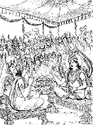
युधिष्ठिर बोले—प्रभो! नक्तव्रत तथा एकभुक्त व्रतका पुण्य एवं फल क्या है? जनार्दन! यह सब मुझे बताइये।
श्रीभगवान्ने कहा—कुन्तीनन्दन! हेमन्त-ऋतुमें जब परम कल्याणमय मार्गशीर्षमास आये, तब उसके कृष्णपक्षकी द्वादशी तिथिको उपवास (व्रत) करना चाहिये। उसकी विधि इस प्रकार है—दृढ़तापूर्वक उत्तम व्रतका पालन करनेवाला शुद्धचित्त पुरुष दशमीको सदा एकभुक्त रहे अथवा शौच-सन्तोषादि नियमोंके पालनपूर्वक नक्तव्रतके स्वरूपको जानकर उसके अनुसार एक बार भोजन करे। दिनके आठवें भागमें जब सूर्यका तेज मन्द पड़ जाता है, उसे ‘नक्त’ जानना चाहिये। रातको भोजन करना ‘नक्त’ नहीं है। गृहस्थके लिये तारोंके दिखायी देनेपर नक्तभोजनका विधान है और संन्यासीके लिये दिनके आठवें भागमें; क्योंकि उसके लिये रातमें भोजनका निषेध है। कुन्तीनन्दन! दशमीकी रात व्यतीत होनेपर एकादशीको प्रात:काल व्रत करनेवाला पुरुष व्रतका नियम ग्रहण करे और सबेरे तथा मध्याह्नको पवित्रताके लिये स्नान करे। कुएँका स्नान निम्न श्रेणीका है। बावलीमें स्नान करना मध्यम, पोखरेमें उत्तम तथा नदीमें उससे भी उत्तम माना गया है। जहाँ जलमें खड़ा होनेपर जल-जन्तुओंको पीड़ा होती हो, वहाँ स्नान करनेपर पाप और पुण्य बराबर होता है। यदि जलको छानकर शुद्ध कर ले तो घरपर भी स्नान करना उत्तम माना गया है। इसलिये पाण्डवश्रेष्ठ! घरपर उक्त विधिसे स्नान करे। स्नानके पहले निम्नांकित मन्त्र पढ़कर शरीरमें मृत्तिका लगा ले—
अश्वक्रान्ते रथक्रान्ते विष्णुक्रान्ते वसुन्धरे।
मृत्तिके हर मे पापं यन्मया पूर्वसञ्चितम्॥
(४०।२८)
‘वसुन्धरे! तुम्हारे ऊपर अश्व और रथ चला करते हैं। भगवान् विष्णुने भी वामन अवतार धारण कर तुम्हें अपने पैरोंसे नापा था। मृत्तिके! मैंने पूर्वकालमें जो पाप संचित किया है, उस मेरे पापको हर लो।’
व्रती पुरुषको चाहिये कि वह एकचित्त और दृढ़संकल्प होकर क्रोध तथा लोभका परित्याग करे। अन्त्यज, पाखण्डी, मिथ्यावादी, ब्राह्मणनिन्दक, अगम्या स्त्रीके साथ गमन करनेवाले अन्यान्य दुराचारी, परधनहारी तथा परस्त्रीगामी मनुष्योंसे वार्तालाप न करे। भगवान् केशवकी पूजा करके उन्हें नैवेद्य भोग लगाये। घरमें भक्तियुक्त मनसे दीपक जलाकर रखे। पार्थ! उस दिन निद्रा और मैथुनका परित्याग करे। धर्मशास्त्रसे मनोरंजन करते हुए सम्पूर्ण दिन व्यतीत करे। नृपश्रेष्ठ! भक्तियुक्त होकर रात्रिमें जागरण करे, ब्राह्मणोंको दक्षिणा दे और प्रणाम करके उनसे त्रुटियोंके लिये क्षमा माँगे। जैसी कृष्णपक्षकी एकादशी है, वैसी ही शुक्लपक्षकी भी है। इसी विधिसे उसका भी व्रत करना चाहिये।
पार्थ! द्विजको उचित है कि वह शुक्ल और कृष्णपक्षकी एकादशीके व्रती लोगोंमें भेदबुद्धि न उत्पन्न करे। शंखोद्धारतीर्थमें स्नान करके भगवान् गदाधरका दर्शन करनेसे जो पुण्य होता है तथा संक्रान्तिके अवसरपर चार लाखका दान देकर जो पुण्य प्राप्त किया जाता है, वह सब एकादशीव्रतकी सोलहवीं कलाके बराबर भी नहीं है। प्रभासक्षेत्रमें चन्द्रमा और सूर्यके ग्रहणके अवसरपर स्नान-दानसे जो पुण्य होता है, वह निश्चय ही एकादशीको उपवास करनेवाले मनुष्यको मिल जाता है। केदारक्षेत्रमें जल पीनेसे पुनर्जन्म नहीं होता। एकादशीका भी ऐसा ही माहात्म्य है। यह भी गर्भवासका निवारण करनेवाली है। पृथ्वीपर अश्वमेध-यज्ञका जो फल होता है, उससे सौ गुना अधिक फल एकादशी-व्रत करनेवालेको मिलता है। जिसके घरमें तपस्वी एवं श्रेष्ठ ब्राह्मण भोजन करते हैं उसको जिस फलकी प्राप्ति होती है, वह एकादशी-व्रत करनेवालेको भी अवश्य मिलता है। वेदांगोंके पारगामी विद्वान् ब्राह्मणको सहस्र गोदान करनेसे जो पुण्य होता है, उससे सौ गुना पुण्य एकादशी-व्रत करनेवालेको प्राप्त होता है। इस प्रकार व्रतीको वह पुण्य प्राप्त होता है, जो देवताओंके लिये भी दुर्लभ है। रातको भोजन कर लेनेपर उससे आधा पुण्य प्राप्त होता है तथा दिनमें एक बार भोजन करनेसे देहधारियोंको नक्त-भोजनका आधा फल मिलता है। जीव जबतक भगवान् विष्णुके प्रिय दिवस एकादशीको उपवास नहीं करता, तभीतक तीर्थ, दान और नियम अपने महत्त्वकी गर्जना करते हैं। इसलिये पाण्डवश्रेष्ठ! तुम इस व्रतका अनुष्ठान करो। कुन्तीनन्दन! यह गोपनीय एवं उत्तम व्रत है, जिसका मैंने तुमसे वर्णन किया है। हजारों यज्ञोंका अनुष्ठान भी एकादशी-व्रतकी तुलना नहीं कर सकता।
युधिष्ठिरने पूछा—भगवन्! पुण्यमयी एकादशी तिथि कैसे उत्पन्न हुई? इस संसारमें क्यों पवित्र मानी गयी? तथा देवताओंको कैसे प्रिय हुई?
श्रीभगवान् बोले—कुन्तीनन्दन! प्राचीन समयकी बात है, सत्ययुगमें मुर नामक दानव रहता था। वह बड़ा ही अद्भुत, अत्यन्त रौद्र तथा सम्पूर्ण देवताओंके लिये भयंकर था। उस कालरूपधारी दुरात्मा महासुरने इन्द्रको भी जीत लिया था। सम्पूर्ण देवता उससे परास्त होकर स्वर्गसे निकाले जा चुके थे और शंकित तथा भयभीत होकर पृथ्वीपर विचरा करते थे। एक दिन सब देवता महादेवजीके पास गये। वहाँ इन्द्रने भगवान् शिवके आगे सारा हाल कह सुनाया।
इन्द्र बोले—महेश्वर! ये देवता स्वर्गलोकसे भ्रष्ट होकर पृथ्वीपर विचर रहे हैं। मनुष्योंमें रहकर इनकी शोभा नहीं होती। देव! कोई उपाय बतलाइये। देवता किसका सहारा लें?
महादेवजीने कहा—देवराज! जहाँ सबको शरण देनेवाले, सबकी रक्षामें तत्पर रहनेवाले जगत्के स्वामी भगवान् गरुडध्वज विराजमान हैं, वहाँ जाओ। वे तुमलोगोंकी रक्षा करेंगे।
भगवान् श्रीकृष्ण कहते हैं—युधिष्ठिर! महादेवजीकी बात सुनकर परम बुद्धिमान् देवराज इन्द्र सम्पूर्ण देवताओंके साथ वहाँ गये। भगवान् गदाधर क्षीरसागरके जलमें सो रहे थे। उनका दर्शन करके इन्द्रने हाथ जोड़कर स्तुति आरम्भ की।

इन्द्र बोले—देवदेवेश्वर! आपको नमस्कार है। देवता और दानव दोनों ही आपकी वन्दना करते हैं। पुण्डरीकाक्ष! आप दैत्योंके शत्रु हैं। मधुसूदन! हमलोगोंकी रक्षा कीजिये। जगन्नाथ! सम्पूर्ण देवता मुर नामक दानवसे भयभीत होकर आपकी शरणमें आये हैं। भक्तवत्सल! हमें बचाइये। देवदेवेश्वर! हमें बचाइये। जनार्दन! हमारी रक्षा कीजिये, रक्षा कीजिये। दानवोंका विनाश करनेवाले कमलनयन! हमारी रक्षा कीजिये। प्रभो! हम सब लोग आपके समीप आये हैं। आपकी ही शरणमें आ पड़े हैं। भगवन्! शरणमें आये हुए देवताओंकी सहायता कीजिये। देव! आप ही पति, आप ही मति, आप ही कर्ता और आप ही कारण हैं। आप ही सब लोगोंकी माता और आप ही इस जगत्के पिता हैं। भगवन्! देवदेवेश्वर! शरणागतवत्सल! देवता भयभीत होकर आपकी शरणमें आये हैं। प्रभो! अत्यन्त उग्र स्वभाववाले महाबली मुर नामक दैत्यने सम्पूर्ण देवताओंको जीतकर इन्हें स्वर्गसे निकाल दिया है।*
* ॐ नमो देवदेवेश देवदानववन्दित।
दैत्यारे पुण्डरीकाक्ष त्राहि नो मधुसूदन॥
सुरा: सर्वे समायाता भयभीताश्च दानवात्।
शरणं त्वां जगन्नाथ त्राहि नो भक्तवत्सल॥
त्राहि नो देवदेवेश त्राहि त्राहि जनार्दन।
त्राहि वै पुण्डरीकाक्ष दानवानां विनाशक॥
त्वत्समीपं गता: सर्वे त्वामेव शरणं प्रभो।
शरणागतदेवानां साहाय्यं कुरु वै प्रभो॥
त्वं पतिस्त्वं मतिर्देव त्वं कर्त्ता त्वं च कारणम्।
त्वं माता सर्वलोकानां त्वमेव जगत: पिता॥
भगवन् देवदेवेश शरणागतवत्सल।
शरणं तव चायाता भयभीताश्च देवता:॥
देवता निर्जिता: सर्वा: स्वर्गभ्रष्टा: कृता विभो।
अत्युग्रेण हि दैत्येन मुरनाम्ना महौजसा॥
(४०।५७—६३)
इन्द्रकी बात सुनकर भगवान् विष्णु बोले—‘देवराज! वह दानव कैसा है? उसका रूप और बल कैसा है तथा उस दुष्टके रहनेका स्थान कहाँ है?’
इन्द्र बोले—देवेश्वर! पूर्वकालमें ब्रह्माजीके वंशमें तालजंघ नामक एक महान् असुर उत्पन्न हुआ था, जो अत्यन्त भयंकर था। उसका पुत्र मुर दानवके नामसे विख्यात हुआ। वह भी अत्यन्त उत्कट, महापराक्रमी और देवताओंके लिये भयंकर है। चन्द्रावती नामसे प्रसिद्ध एक नगरी है, उसीमें स्थान बनाकर वह निवास करता है। उस दैत्यने समस्त देवताओंको परास्त करके स्वर्गलोकसे बाहर कर दिया है। उसने एक दूसरे ही इन्द्रको स्वर्गके सिंहासनपर बैठाया है। अग्नि, चन्द्रमा, सूर्य, वायु तथा वरुण भी उसने दूसरे ही बनाये हैं। जनार्दन! मैं सच्ची बात बता रहा हूँ। उसने सब कोई दूसरे ही कर लिये हैं। देवताओंको तो उसने प्रत्येक स्थानसे वंचित कर दिया है।
इन्द्रका कथन सुनकर भगवान् जनार्दनको बड़ा क्रोध हुआ। वे देवताओंको साथ लेकर चन्द्रावतीपुरीमें गये। देवताओंने देखा, दैत्यराज बारम्बार गर्जना कर रहा है; उससे परास्त होकर सम्पूर्ण देवता दसों दिशाओंमें भाग गये। अब वह दानव भगवान् विष्णुको देखकर बोला, ‘खड़ा रह, खड़ा रह।’ उसकी ललकार सुनकर भगवान्के नेत्र क्रोधसे लाल हो गये। वे बोले—‘अरे दुराचारी दानव! मेरी इन भुजाओंको देख।’ यह कहकर श्रीविष्णुने अपने दिव्य बाणोंसे सामने आये हुए दुष्ट दानवोंको मारना आरम्भ किया।
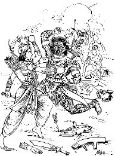
दानव भयसे विह्वल हो उठे। पाण्डुनन्दन! तत्पश्चात् श्रीविष्णुने दैत्य-सेनापर चक्रका प्रहार किया। उससे छिन्न-भिन्न होकर सैकड़ों योद्धा मौतके मुखमें चले गये। इसके बाद भगवान् मधुसूदन बदरिकाश्रमको चले गये। वहाँ सिंहावती नामकी गुफा थी, जो बारह योजन लम्बी थी। पाण्डुनन्दन! उस गुफामें एक ही दरवाजा था। भगवान् विष्णु उसीमें सो रहे। दानव मुर भगवान्को मार डालनेके उद्योगमें लगा था। वह उनके पीछे लगा रहा। वहाँ पहुँचकर उसने भी उसी गुहामें प्रवेश किया। वहाँ भगवान्को सोते देख उसे बड़ा हर्ष हुआ। उसने सोचा, ‘यह दानवोंको भय देनेवाला देवता है। अत: निस्सन्देह इसे मार डालूँगा।’ युधिष्ठिर! दानवके इस प्रकार विचार करते ही भगवान् विष्णुके शरीरसे एक कन्या प्रकट हुई, जो बड़ी ही रूपवती, सौभाग्यशालिनी तथा दिव्य अस्त्र-शस्त्रोंसे युक्त थी। वह भगवान्के तेजके अंशसे उत्पन्न हुई थी। उसका बल और पराक्रम महान् था। युधिष्ठिर! दानवराज मुरने उस कन्याको देखा। कन्याने युद्धका विचार करके दानवके साथ युद्धके लिये याचना की। युद्ध छिड़ गया। कन्या सब प्रकारकी युद्धकलामें निपुण थी! वह मुर नामक महान् असुर उसके हुंकारमात्रसे राखका ढेर हो गया। दानवके मारे जानेपर भगवान् जाग उठे। उन्होंने दानवको धरतीपर पड़ा देख, पूछा—‘मेरा यह शत्रु अत्यन्त उग्र और भयंकर था, किसने इसका वध किया है?’
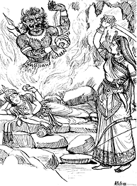
कन्या बोली—स्वामिन्! आपके ही प्रसादसे मैंने इस महादैत्यका वध किया है।
श्रीभगवान्ने कहा—कल्याणी! तुम्हारे इस कर्मसे तीनों लोकोंके मुनि और देवता आनन्दित हुए हैं! अत: तुम्हारे मनमें जैसी रुचि हो, उसके अनुसार मुझसे कोई वर माँगो; देवदुर्लभ होनेपर भी वह वर मैं तुम्हें दूँगा, इसमें तनिक भी संदेह नहीं है।
वह कन्या साक्षात् एकादशी ही थी। उसने कहा, ‘प्रभो! यदि आप प्रसन्न हैं तो मैं आपकी कृपासे सब तीर्थोंमें प्रधान, समस्त विघ्नोंका नाश करनेवाली तथा सब प्रकारकी सिद्धि देनेवाली देवी होऊँ। जनार्दन! जो लोग आपमें भक्ति रखते हुए मेरे दिनको उपवास करेंगे, उन्हें सब प्रकारकी सिद्धि प्राप्त हो। माधव! जो लोग उपवास, नक्त अथवा एकभुक्त करके मेरे व्रतका पालन करें, उन्हें आप धन, धर्म और मोक्ष प्रदान कीजिये।’
श्रीविष्णु बोले—कल्याणी! तुम जो कुछ कहती हो, वह सब पूर्ण होगा।
भगवान् श्रीकृष्ण कहते हैं—युधिष्ठिर! ऐसा वर पाकर महाव्रता एकादशी बहुत प्रसन्न हुई। दोनों पक्षोंकी एकादशी समान रूपसे कल्याण करनेवाली है। इसमें शुक्ल और कृष्णका भेद नहीं करना चाहिये। यदि उदयकालमें थोड़ी-सी एकादशी, मध्यमें पूरी द्वादशी और अन्तमें किंचित् त्रयोदशी हो तो वह ‘त्रिस्पृशा’ एकादशी कहलाती है। वह भगवान्को बहुत ही प्रिय है। यदि एक त्रिस्पृशा एकादशीको उपवास कर लिया जाय तो एक सहस्र एकादशीव्रतोंका फल प्राप्त होता है तथा इसी प्रकार द्वादशीमें पारण करनेपर सहस्र गुना फल माना गया है। अष्टमी, एकादशी, षष्ठी, तृतीया और चतुर्दशी—ये यदि पूर्व तिथिसे विद्ध हों तो उनमें व्रत नहीं करना चाहिये। परवर्तिनी तिथिसे युक्त होनेपर ही इनमें उपवासका विधान है। पहले दिन दिनमें और रातमें भी एकादशी हो तथा दूसरे दिन केवल प्रात:काल एक दण्ड एकादशी रहे तो पहली तिथिका परित्याग करके दूसरे दिनकी द्वादशीयुक्त एकादशीको ही उपवास करना चाहिये। यह विधि मैंने दोनों पक्षोंकी एकादशीके लिये बतायी है। जो मनुष्य एकादशीको उपवास करता है, वह वैकुण्ठधाममें, जहाँ साक्षात् भगवान् गरुडध्वज विराजमान हैं, जाता है। जो मानव हर समय एकादशीके माहात्म्यका पाठ करता है, उसे सहस्र गोदानोंके पुण्यका फल प्राप्त होता है। जो दिन या रातमें भक्तिपूर्वक इस माहात्म्यका श्रवण करते हैं, वे निस्सन्देह ब्रह्महत्या आदि पापोंसे मुक्त हो जाते हैं। एकादशीके समान पापनाशक व्रत दूसरा कोई नहीं है।
मार्गशीर्ष शुक्लपक्षकी ‘मोक्षा’ एकादशीका माहात्म्य
युधिष्ठिर बोले—देवदेवेश्वर! मैं पूछता हूँ—मार्गशीर्षमासके शुक्लपक्षमें जो एकादशी होती है, उसका क्या नाम है? कौन-सी विधि है तथा उसमें किस देवताका पूजन किया जाता है? स्वामिन्! यह सब यथार्थरूपसे बताइये।
श्रीकृष्णने कहा—नृपश्रेष्ठ! मार्गशीर्षमासके कृष्णपक्षमें ‘उत्पत्ति’ (उत्पन्ना) नामकी एकादशी होती है, जिसका वर्णन मैंने तुम्हारे समक्ष कर दिया है। अब शुक्लपक्षकी एकादशीका वर्णन करूँगा, जिसके श्रवणमात्रासे वाजपेय-यज्ञका फल मिलता है। उसका नाम है—‘मोक्षा’ एकादशी, जो सब पापोंका अपहरण करनेवाली है। राजन्! उस दिन यत्नपूर्वक तुलसीकी मंजरी तथा धूप-दीपादिसे भगवान् दामोदरका पूजन करना चाहिये। पूर्वोक्त विधिसे ही दशमी और एकादशीके नियमका पालन करना उचित है। ‘मोक्षा’ एकादशी बड़े-बड़े पातकोंका नाश करनेवाली है। उस दिन रात्रिमें मेरी प्रसन्नताके लिये नृत्य, गीत और स्तुतिके द्वारा जागरण करना चाहिये। जिसके पितर पापवश नीच योनिमें पड़े हों, वे इसका पुण्य-दान करनेसे मोक्षको प्राप्त होते हैं। इसमें तनिक भी संदेह नहीं है। पूर्वकालकी बात है, वैष्णवोंसे विभूषित परम रमणीय चम्पक नगरमें वैखानस नामक राजा रहते थे। वे अपनी प्रजाका पुत्रकी भाँति पालन करते थे। इस प्रकार राज्य करते हुए राजाने एक दिन रातको स्वप्नमें अपने पितरोंको नीच योनिमें पड़ा हुआ देखा। उन सबको इस अवस्थामें देखकर राजाके मनमें बड़ा विस्मय हुआ और प्रात:काल ब्राह्मणोंसे उन्होंने उस स्वप्नका सारा हाल कह सुनाया।
राजा बोले—ब्राह्मणो! मैंने अपने पितरोंको नरकमें गिरा देखा है। वे बारम्बार रोते हुए मुझसे यों कह रहे थे कि ‘तुम हमारे तनुज हो, इसलिये इस नरक-समुद्रसे हमलोगोंका उद्धार करो।’ द्विजवरो! इस रूपमें मुझे पितरोंके दर्शन हुए हैं। इससे मुझे चैन नहीं मिलता। क्या करूँ, कहाँ जाऊँ? मेरा हृदय रुँधा जा रहा है। द्विजोत्तमो! वह व्रत, वह तप और वह योग, जिससे मेरे पूर्वज तत्काल नरकसे छुटकारा पा जायँ, बतानेकी कृपा करें। मुझ बलवान् एवं साहसी पुत्रके जीते-जी मेरे माता-पिता घोर नरकमें पड़े हुए हैं! अत: ऐसे पुत्रसे क्या लाभ है।
ब्राह्मण बोले—राजन्! यहाँसे निकट ही पर्वत मुनिका महान् आश्रम है। वे भूत और भविष्यके भी ज्ञाता हैं। नृपश्रेष्ठ! आप उन्हींके पास चले जाइये।
ब्राह्मणोंकी बात सुनकर महाराज वैखानस शीघ्र ही पर्वत मुनिके आश्रमपर गये और वहाँ उन मुनिश्रेष्ठको देखकर उन्होंने दण्डवत्-प्रणाम करके मुनिके चरणोंका स्पर्श किया। मुनिने भी राजासे राज्यके सातों* अंगोंकी कुशल पूछी।
* राजा, मन्त्री, राष्ट्र, किला, खजाना, सेना और मित्रवर्ग—ये ही परस्पर उपकार करनेवाले राज्यके सात अंग हैं।
राजा बोले—स्वामिन्! आपकी कृपासे मेरे राज्यके सातों अंग सकुशल हैं। किन्तु मैंने स्वप्नमें देखा है कि मेरे पितर नरकमें पड़े हैं; अत: बताइये किस पुण्यके प्रभावसे उनका वहाँसे छुटकारा होगा?
राजाकी यह बात सुनकर मुनिश्रेष्ठ पर्वत एक मुहूर्ततक ध्यानस्थ रहे। इसके बाद वे राजासे बोले—‘महाराज! मार्गशीर्षमासके शुक्लपक्षमें जो ‘मोक्षा’ नामकी एकादशी होती है, तुम सब लोग उसका व्रत करो और उसका पुण्य पितरोंको दे डालो। उस पुण्यके प्रभावसे उनका नरकसे उद्धार हो जायगा।’
भगवान् श्रीकृष्ण कहते हैं—युधिष्ठिर! मुनिकी यह बात सुनकर राजा पुन: अपने घर लौट आये। जब उत्तम मार्गशीर्षमास आया, तब राजा वैखानसने मुनिके कथनानुसार ‘मोक्षा’ एकादशीका व्रत करके उसका पुण्य समस्त पितरोंसहित पिताको दे दिया। पुण्य देते ही क्षणभरमें आकाशसे फूलोंकी वर्षा होने लगी। वैखानसके पिता पितरोंसहित नरकसे छुटकारा पा गये और आकाशमें आकर राजाके प्रति यह पवित्र वचन बोले—‘बेटा! तुम्हारा कल्याण हो।’ यह कहकर वे स्वर्गमें चले गये। राजन्! जो इस प्रकार कल्याणमयी ‘मोक्षा’ एकादशीका व्रत करता है, उसके पाप नष्ट हो जाते हैं और मरनेके बाद वह मोक्ष प्राप्त कर लेता है। यह मोक्ष देनेवाली ‘मोक्षा’ एकादशी मनुष्योंके लिये चिन्तामणिके समान समस्त कामनाओंको पूर्ण करनेवाली है। इस माहात्म्यके पढ़ने और सुननेसे वाजपेय-यज्ञका फल मिलता है।
पौषमास कृष्णपक्षकी ‘सफला’ एकादशीका माहात्म्य
युधिष्ठिरने पूछा—स्वामिन्! पौषमासके कृष्णपक्षमें जो एकादशी होती है, उसका क्या नाम है? उसकी क्या विधि है तथा उसमें किस देवताकी पूजा की जाती है? यह बताइये।
भगवान् श्रीकृष्णने कहा—राजेन्द्र! बतलाता हूँ, सुनो; बड़ी-बड़ी दक्षिणावाले यज्ञोंसे भी मुझे उतना संतोष नहीं होता, जितना एकादशीव्रतके अनुष्ठानसे होता है। इसलिये सर्वथा प्रयत्न करके एकादशीका व्रत करना चाहिये। पौषमासके कृष्णपक्षमें ‘सफला’ नामकी एकादशी होती है। उस दिन पूर्वोक्त विधानसे ही विधिपूर्वक भगवान् नारायणकी पूजा करनी चाहिये। एकादशी कल्याण करनेवाली है। अत: इसका व्रत अवश्य करना उचित है। जैसे नागोंमें शेषनाग, पक्षियोंमें गरुड़, देवताओंमें श्रीविष्णु तथा मनुष्योंमें ब्राह्मण श्रेष्ठ है, उसी प्रकार सम्पूर्ण व्रतोंमें एकादशी तिथिका व्रत श्रेष्ठ है। राजन्! ‘सफला’ एकादशीको नाम-मन्त्रोंका उच्चारण करके फलोंके द्वारा श्रीहरिका पूजन करे। नारियलके फल, सुपारी, बिजौरा नीबू, जमीरा नीबू, अनार, सुन्दर आँवला, लौंग, बेर तथा विशेषत: आमके फलोंसे देवदेवेश्वर श्रीहरिकी पूजा करनी चाहिये। इसी प्रकार धूप-दीपसे भी भगवान्की अर्चना करे। ‘सफला’ एकादशीको विशेषरूपसे दीप-दान करनेका विधान है। रातको वैष्णव पुरुषोंके साथ जागरण करना चाहिये। जागरण करनेवालेको जिस फलकी प्राप्ति होती है, वह हजारों वर्ष तपस्या करनेसे भी नहीं मिलता।
नृपश्रेष्ठ! अब ‘सफला’ एकादशीकी शुभकारिणी कथा सुनो। चम्पावती नामसे विख्यात एक पुरी है, जो कभी राजा माहिष्मतकी राजधानी थी। राजर्षि माहिष्मतके पाँच पुत्र थे। उनमें जो ज्येष्ठ था, वह सदा पापकर्ममें ही लगा रहता था। परस्त्रीगामी और वेश्यासक्त था। उसने पिताके धनको पापकर्ममें ही खर्च किया। वह सदा दुराचारपरायण तथा ब्राह्मणोंका निन्दक था। वैष्णवों और देवताओंकी भी हमेशा निन्दा किया करता था। अपने पुत्रको ऐसा पापाचारी देखकर राजा माहिष्मतने राजकुमारोंमें उसका नाम लुम्भक रख दिया। फिर पिता और भाइयोंने मिलकर उसे राज्यसे बाहर निकाल दिया। लुम्भक उस नगरसे निकलकर गहन वनमें चला गया। वहीं रहकर उस पापीने प्राय: समूचे नगरका धन लूट लिया। एक दिन जब वह चोरी करनेके लिये नगरमें आया तो रातमें पहरा देनेवाले सिपाहियोंने उसे पकड़ लिया। किन्तु जब उसने अपनेको राजा माहिष्मतका पुत्र बतलाया तो सिपाहियोंने उसे छोड़ दिया। फिर वह पापी वनमें लौट आया और प्रतिदिन मांस तथा वृक्षोंके फल खाकर जीवन-निर्वाह करने लगा। उस दुष्टका विश्राम-स्थान पीपल वृक्षके निकट था। वहाँ बहुत वर्षोंका पुराना पीपलका वृक्ष था। उस वनमें वह वृक्ष एक महान् देवता माना जाता था। पापबुद्धि लुम्भक वहीं निवास करता था।
बहुत दिनोंके पश्चात् एक दिन किसी संचित पुण्यके प्रभावसे उसके द्वारा एकादशीके व्रतका पालन हो गया। पौषमासमें कृष्णपक्षकी दशमीके दिन पापिष्ठ लुम्भकने वृक्षोंके फल खाये और वस्त्रहीन होनेके कारण रातभर जाड़ेका कष्ट भोगा। उस समय न तो उसे नींद आयी और न आराम ही मिला। वह निष्प्राण-सा हो रहा था। सूर्योदय होनेपर भी उस पापीको होश नहीं हुआ। ‘सफला’ एकादशीके दिन भी लुम्भक बेहोश पड़ा रहा। दोपहर होनेपर उसे चेतना प्राप्त हुई। फिर इधर-उधर दृष्टि डालकर वह आसनसे उठा और लँगड़ेकी भाँति पैरोंसे बार-बार लड़खड़ाता हुआ वनके भीतर गया। वह भूखसे दुर्बल और पीड़ित हो रहा था। राजन्! उस समय लुम्भक बहुत-से फल लेकर ज्यों ही विश्राम-स्थानपर लौटा, त्यों ही सूर्यदेव अस्त हो गये। तब उसने वृक्षकी जड़में बहुत-से फल निवेदन करते हुए कहा—‘इन फलोंसे लक्ष्मीपति भगवान् विष्णु संतुष्ट हों।’ यों कहकर लुम्भकने रातभर नींद नहीं ली। इस प्रकार अनायास ही उसने इस व्रतका पालन कर लिया। उस समय सहसा आकाशवाणी हुई—‘राजकुमार! तुम ‘सफला’ एकादशीके प्रसादसे राज्य और पुत्र प्राप्त करोगे।’ ‘बहुत अच्छा’ कहकर उसने वह वरदान स्वीकार किया। इसके बाद उसका रूप दिव्य हो गया। तबसे उसकी उत्तम बुद्धि भगवान् विष्णुके भजनमें लग गयी। दिव्य आभूषणोंकी शोभासे सम्पन्न होकर उसने अकण्टक राज्य प्राप्त किया और पन्द्रह वर्षोंतक वह उसका संचालन करता रहा। उस समय भगवान् श्रीकृष्णकी कृपासे उसके मनोज्ञा नामक पुत्र उत्पन्न हुआ। जब वह बड़ा हुआ, तब लुम्भकने तुरन्त ही राज्यकी ममता छोड़कर उसे पुत्रको सौंप दिया और वह भगवान् श्रीकृष्णके समीप चला गया, जहाँ जाकर मनुष्य कभी शोकमें नहीं पड़ता। राजन्! इस प्रकार जो ‘सफला’ एकादशीका उत्तम व्रत करता है, वह इस लोकमें सुख भोगकर मरनेके पश्चात् मोक्षको प्राप्त होता है। संसारमें वे मनुष्य धन्य हैं, जो ‘सफला’ एकादशीके व्रतमें लगे रहते हैं। उन्हींका जन्म सफल है। महाराज! इसकी महिमाको पढ़ने, सुनने तथा उसके अनुसार आचरण करनेसे मनुष्य राजसूय-यज्ञका फल पाता है।
पौषमास शुक्लपक्षकी ‘पुत्रदा’ एकादशीका माहात्म्य
युधिष्ठिर बोले—श्रीकृष्ण! आपने शुभकारिणी ‘सफला’ एकादशीका वर्णन किया। अब कृपा करके शुक्लपक्षकी एकादशीका महत्त्व बतलाइये। उसका क्या नाम है? कौन-सी विधि है? तथा उसमें किस देवताका पूजन किया जाता है?
भगवान् श्रीकृष्णने कहा—राजन्! पौषके शुक्लपक्षकी जो एकादशी है, उसे बतलाता हूँ; सुनो। महाराज! संसारके हितकी इच्छासे मैं इसका वर्णन करता हूँ। राजन्! पूर्वोक्त विधिसे ही यत्नपूर्वक इसका व्रत करना चाहिये। इसका नाम ‘पुत्रदा’ है। यह सब पापोंको हरनेवाली उत्तम तिथि है। समस्त कामनाओं तथा सिद्धियोंके दाता भगवान् नारायण इस तिथिके अधिदेवता हैं। चराचर प्राणियोंसहित समस्त त्रिलोकीमें इससे बढ़कर दूसरी कोई तिथि नहीं है। पूर्वकालकी बात है, भद्रावती पुरीमें राजा सुकेतुमान् राज्य करते थे। उनकी रानीका नाम चम्पा था। राजाको बहुत समयतक कोई वंशधर पुत्र नहीं प्राप्त हुआ। इसलिये दोनों पति-पत्नी सदा चिन्ता और शोकमें डूबे रहते थे। राजाके पितर उनके दिये हुए जलको शोकोच्छ्वाससे गरम करके पीते थे। ‘राजाके बाद और कोई ऐसा नहीं दिखायी देता, जो हमलोगोंका तर्पण करेगा’ यह सोच-सोचकर पितर दु:खी रहते थे।
एक दिन राजा घोड़ेपर सवार हो गहन वनमें चले गये। पुरोहित आदि किसीको भी इस बातका पता न था। मृग और पक्षियोंसे सेवित उस सघन काननमें राजा भ्रमण करने लगे। मार्गमें कहीं सियारकी बोली सुनायी पड़ती थी तो कहीं उल्लुओंकी। जहाँ-तहाँ रीछ और मृग दृष्टिगोचर हो रहे थे। इस प्रकार घूम-घूमकर राजा वनकी शोभा देख रहे थे, इतनेमें दोपहर हो गया। राजाको भूख और प्यास सताने लगी। वे जलकी खोजमें इधर-उधर दौड़ने लगे। किसी पुण्यके प्रभावसे उन्हें एक उत्तम सरोवर दिखायी दिया, जिसके समीप मुनियोंके बहुत-से आश्रम थे। शोभाशाली नरेशने उन आश्रमोंकी ओर देखा। उस समय शुभकी सूचना देनेवाले शकुन होने लगे। राजाका दाहिना नेत्र और दाहिना हाथ फड़कने लगा, जो उत्तम फलकी सूचना दे रहा था। सरोवरके तटपर बहुत-से मुनि वेदपाठ कर रहे थे। उन्हें देखकर राजाको बड़ा हर्ष हुआ। वे घोड़ेसे उतरकर मुनियोंके सामने खड़े हो गये और पृथक्-पृथक् उन सबकी वन्दना करने लगे। वे मुनि उत्तम व्रतका पालन करनेवाले थे। जब राजाने हाथ जोड़कर बारम्बार दण्डवत् किया, तब मुनि बोले—‘राजन्! हमलोग तुमपर प्रसन्न हैं।’
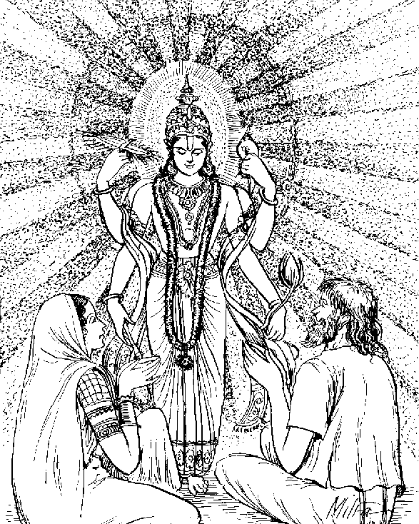
राजा बोले—आपलोग कौन हैं? आपके नाम क्या हैं तथा आपलोग किसलिये यहाँ एकत्रित हुए हैं? यह सब सच-सच बताइये।
मुनि बोले—राजन्! हमलोग विश्वेदेव हैं, यहाँ स्नानके लिये आये हैं। माघ निकट आया है। आजसे पाँचवें दिन माघका स्नान आरम्भ हो जायगा। आज ही ‘पुत्रदा’ नामकी एकादशी है, जो व्रत करनेवाले मनुष्योंको पुत्र देती है।
राजाने कहा—विश्वेदेवगण! यदि आपलोग प्रसन्न हैं तो मुझे पुत्र दीजिये।
मुनि बोले—राजन्! आजके ही दिन ‘पुत्रदा’ नामकी एकादशी है। इसका व्रत बहुत विख्यात है। तुम आज इस उत्तम व्रतका पालन करो। महाराज! भगवान् केशवके प्रसादसे तुम्हें अवश्य पुत्र प्राप्त होगा।
भगवान् श्रीकृष्ण कहते हैं—युधिष्ठिर! इस प्रकार उन मुनियोंके कहनेसे राजाने उत्तम व्रतका पालन किया। महर्षियोंके उपदेशके अनुसार विधिपूर्वक पुत्रदा एकादशीका अनुष्ठान किया। फिर द्वादशीको पारण करके मुनियोंके चरणोंमें बारम्बार मस्तक झुकाकर राजा अपने घर आये। तदनन्तर रानीने गर्भ धारण किया। प्रसवकाल आनेपर पुण्यकर्मा राजाको तेजस्वी पुत्र प्राप्त हुआ, जिसने अपने गुणोंसे पिताको संतुष्ट कर दिया। वह प्रजाओंका पालक हुआ। इसलिये राजन्! ‘पुत्रदा’ का उत्तम व्रत अवश्य करना चाहिये। मैंने लोगोंके हितके लिये तुम्हारे सामने इसका वर्णन किया है। जो मनुष्य एकाग्रचित्त होकर ‘पुत्रदा’ का व्रत करते हैं, वे इस लोकमें पुत्र पाकर मृत्युके पश्चात् स्वर्गगामी होते हैं। इस माहात्म्यको पढ़ने और सुननेसे अग्निष्टोम-यज्ञका फल मिलता है!
माघमास कृष्णपक्षकी ‘षट्तिला’ एकादशीका माहात्म्य
युधिष्ठिरने पूछा—जगन्नाथ! श्रीकृष्ण! आदिदेव! जगत्पते! माघमासके कृष्णपक्षमें कौन-सी एकादशी होती है? उसके लिये कैसी विधि है? तथा उसका फल क्या है? महाप्राज्ञ! कृपा करके ये सब बातें बताइये।
श्रीभगवान् बोले—नृपश्रेष्ठ! सुनो, माघमासके कृष्णपक्षकी जो एकादशी है, वह ‘षट्तिला’ के नामसे विख्यात है, जो सब पापोंका नाश करनेवाली है। अब तुम ‘षट्तिला’ की पापहारिणी कथा सुनो, जिसे मुनिश्रेष्ठ पुलस्त्यने दाल्भ्यसे कहा था।
दाल्भ्यने पूछा—ब्रह्मन्! मृत्युलोकमें आये हुए प्राणी प्राय: पापकर्म करते हैं। उन्हें नरकमें न जाना पड़े, इसके लिये कौन-सा उपाय है? बतानेकी कृपा करें।
पुलस्त्यजी बोले—महाभाग! तुमने बहुत अच्छी बात पूछी है, बतलाता हूँ; सुनो। माघमास आनेपर मनुष्यको चाहिये कि वह नहा-धोकर पवित्र हो इन्द्रियोंको संयममें रखते हुए काम, क्रोध, अहंकार, लोभ और चुगली आदि बुराइयोंको त्याग दे। देवाधिदेव! भगवान्का स्मरण करके जलसे पैर धोकर भूमिपर पड़े हुए गोबरका संग्रह करे। उसमें तिल और कपास छोड़कर एक सौ आठ पिंडिकाएँ बनाये। फिर माघमें जब आर्द्रा या मूल नक्षत्र आये, तब कृष्णपक्षकी एकादशी करनेके लिये नियम ग्रहण करे। भलीभाँति स्नान करके पवित्र हो शुद्धभावसे देवाधिदेव श्रीविष्णुकी पूजा करे। कोई भूल हो जानेपर श्रीकृष्णका नामोच्चारण करे। रातको जागरण और होम करे। चन्दन, अरगजा, कपूर, नैवेद्य आदि सामग्रीसे शंख, चक्र और गदा धारण करनेवाले देवदेवेश्वर श्रीहरिकी पूजा करे। तत्पश्चात् भगवान्का स्मरण करके बारम्बार श्रीकृष्णनामका उच्चारण करते हुए कुम्हड़े, नारियल अथवा बिजौरेके फलसे भगवान्को विधिपूर्वक पूजकर अर्घ्य दे। अन्य सब सामग्रियोंके अभावमें सौ सुपारियोंके द्वारा भी पूजन और अर्घ्यदान किये जा सकते हैं। अर्घ्यका मन्त्र इस प्रकार है—
कृष्ण कृष्ण कृपालुस्त्वमगतीनां गतिर्भव।
संसारार्णवमग्नानां प्रसीद पुरुषोत्तम॥
नमस्ते पुण्डरीकाक्ष नमस्ते विश्वभावन।
सुब्रह्मण्य नमस्तेऽस्तु महापुरुष पूर्वज॥
गृहाणार्घ्यं मया दत्तं लक्ष्म्या सह जगत्पते।
(४४।१८—२०)
‘सच्चिदानन्दस्वरूप श्रीकृष्ण! आप बड़े दयालु हैं। हम आश्रयहीन जीवोंके आप आश्रयदाता होइये। पुरुषोत्तम! हम संसार-समुद्रमें डूब रहे हैं, आप हमपर प्रसन्न होइये। कमलनयन! आपको नमस्कार है, विश्वभावन! आपको नमस्कार है। सुब्रह्मण्य! महापुरुष! सबके पूर्वज! आपको नमस्कार है। जगत्पते! आप लक्ष्मीजीके साथ मेरा दिया हुआ अर्घ्य स्वीकार करें।’
तत्पश्चात् ब्राह्मणकी पूजा करे। उसे जलका घड़ा दान करे। साथ ही छाता, जूता और वस्त्र भी दे। दान करते समय ऐसा कहे—‘इस दानके द्वारा भगवान् श्रीकृष्ण मुझपर प्रसन्न हों।’ अपनी शक्तिके अनुसार श्रेष्ठ ब्राह्मणको काली गौ दान करे। द्विजश्रेष्ठ! विद्वान् पुरुषको चाहिये कि वह तिलसे भरा हुआ पात्र भी दान करे। उन तिलोंके बोनेपर उनसे जितनी शाखाएँ पैदा हो सकती हैं, उतने हजार वर्षोंतक वह स्वर्गलोकमें प्रतिष्ठित होता है। तिलसे स्नान करे, तिलका उबटन लगाये, तिलसे होम करे; तिल मिलाया हुआ जल पिये, तिलका दान करे और तिलको भोजनके काममें ले। इस प्रकार छ: कामोंमें तिलका उपयोग करनेसे यह एकादशी ‘षट्तिला’ कहलाती है, जो सब पापोंका नाश करनेवाली है।*
* तिलस्नायी तिलोद्वर्ती तिलहोमी तिलोदकी।
तिलदाता च भोक्ता च षट्तिला पापनाशिनी॥
(४४।२४)
माघमास शुक्लपक्षकी ‘जया’ एकादशीका माहात्म्य
युधिष्ठिरने पूछा—भगवन्! आपने माघमासके कृष्णपक्षकी ‘षट्तिला’ एकादशीका वर्णन किया। अब कृपा करके यह बताइये कि शुक्लपक्षमें कौन-सी एकादशी होती है? उसकी विधि क्या है? तथा उसमें किस देवताका पूजन किया जाता है?
भगवान् श्रीकृष्ण बोले—राजेन्द्र! बतलाता हूँ, सुनो। माघ-मासके शुक्लपक्षमें जो एकादशी होती है, उसका नाम ‘जया’ है। वह सब पापोंको हरनेवाली उत्तम तिथि है। पवित्र होनेके साथ ही पापोंका नाश करनेवाली है तथा मनुष्योंको भोग और मोक्ष प्रदान करती है। इतना ही नहीं, वह ब्रह्महत्या-जैसे पाप तथा पिशाचत्वका भी विनाश करनेवाली है। इसका व्रत करनेपर मनुष्योंको कभी प्रेतयोनिमें नहीं जाना पड़ता। इसलिये राजन्! प्रयत्नपूर्वक ‘जया’ नामकी एकादशीका व्रत करना चाहिये।
एक समयकी बात है, स्वर्गलोकमें देवराज इन्द्र राज्य करते थे। देवगण पारिजात-वृक्षोंसे भरे हुए नन्दनवनमें अप्सराओंके साथ विहार कर रहे थे। पचास करोड़ गन्धर्वोंके नायक देवराज इन्द्रने स्वेच्छानुसार वनमें विहार करते हुए बड़े हर्षके साथ नृत्यका आयोजन किया। उसमें गन्धर्व गान कर रहे थे, जिनमें पुष्पदन्त, चित्रसेन तथा उसका पुत्र—ये तीन प्रधान थे। चित्रसेनकी स्त्रीका नाम मालिनी था। मालिनीसे एक कन्या उत्पन्न हुई थी, जो पुष्पवन्तीके नामसे विख्यात थी। पुष्पदन्त गन्धर्वके एक पुत्र था, जिसको लोग माल्यवान् कहते थे। माल्यवान् पुष्पवन्तीके रूपपर अत्यन्त मोहित था। ये दोनों भी इन्द्रके संतोषार्थ नृत्य करनेके लिये आये थे। इन दोनोंका गान हो रहा था, इनके साथ अप्सराएँ भी थीं। परस्पर अनुरागके कारण ये दोनों मोहके वशीभूत हो गये। चित्तमें भ्रान्ति आ गयी। इसलिये वे शुद्ध गान न गा सके। कभी ताल भंग हो जाता और कभी गीत बन्द हो जाता था। इन्द्रने इस प्रमादपर विचार किया और इसमें अपना अपमान समझकर वे कुपित हो गये। अत: इन दोनोंको शाप देते हुए बोले—‘ओ मूर्खो! तुम दोनोंको धिक्कार है! तुमलोग पतित और मेरी आज्ञा भंग करनेवाले हो; अत: पति-पत्नीके रूपमें रहते हुए पिशाच हो जाओ।’
इन्द्रके इस प्रकार शाप देनेपर इन दोनोंके मनमें बड़ा दु:ख हुआ। वे हिमालय पर्वतपर चले गये और पिशाच-योनिको पाकर भयंकर दु:ख भोगने लगे। शारीरिक पातकसे उत्पन्न तापसे पीड़ित होकर दोनों ही पर्वतकी कन्दराओंमें विचरते रहते थे। एक दिन पिशाचने अपनी पत्नी पिशाचीसे कहा—‘हमने कौन-सा पाप किया है, जिससे यह पिशाच-योनि प्राप्त हुई है? नरकका कष्ट अत्यन्त भयंकर है तथा पिशाच-योनि भी बहुत दु:ख देनेवाली है। अत: पूर्ण प्रयत्न करके पापसे बचना चाहिये।’
इस प्रकार चिन्तामग्न होकर वे दोनों दु:खके कारण सूखते जा रहे थे। दैवयोगसे उन्हें माघमासकी एकादशी तिथि प्राप्त हो गयी। ‘जया’ नामसे विख्यात तिथि, जो सब तिथियोंमें उत्तम है, आयी। उस दिन उन दोनोंने सब प्रकारके आहार त्याग दिये। जलपानतक नहीं किया। किसी जीवकी हिंसा नहीं की, यहाँतक कि फल भी नहीं खाया। निरन्तर दु:खसे युक्त होकर वे एक पीपलके समीप बैठे रहे। सूर्यास्त हो गया। उनके प्राण लेनेवाली भयंकर रात उपस्थित हुई। उन्हें नींद नहीं आयी। वे रति या और कोई सुख भी नहीं पा सके। सूर्योदय हुआ। द्वादशीका दिन आया। उन पिशाचोंके द्वारा ‘जया’ के उत्तम व्रतका पालन हो गया। उन्होंने रातमें जागरण भी किया था। उस व्रतके प्रभावसे तथा भगवान् विष्णुकी शक्तिसे उन दोनोंकी पिशाचता दूर हो गयी। पुष्पवन्ती और माल्यवान् अपने पूर्वरूपमें आ गये। उनके हृदयमें वही पुराना स्नेह उमड़ रहा था। उनके शरीरपर पहले ही-जैसे अलंकार शोभा पा रहे थे। वे दोनों मनोहर रूप धारण करके विमानपर बैठे और स्वर्गलोकमें चले गये। वहाँ देवराज इन्द्रके सामने जाकर दोनोंने बड़ी प्रसन्नताके साथ उन्हें प्रणाम किया। उन्हें इस रूपमें उपस्थित देखकर इन्द्रको बड़ा विस्मय हुआ। उन्होंने पूछा—‘बताओ, किस पुण्यके प्रभावसे तुम दोनोंका पिशाचत्व दूर हुआ है। तुम मेरे शापको प्राप्त हो चुके थे, फिर किस देवताने तुम्हें उससे छुटकारा दिलाया है?’
माल्यवान् बोला—स्वामिन्! भगवान् वासुदेवकी कृपा तथा ‘जया’ नामक एकादशीके व्रतसे हमारी पिशाचता दूर हुई है।
इन्द्रने कहा—तो अब तुम दोनों मेरे कहनेसे सुधापान करो। जो लोग एकादशीके व्रतमें तत्पर और भगवान् श्रीकृष्णके शरणागत होते हैं, वे हमारे भी पूजनीय हैं।
भगवान् श्रीकृष्ण कहते हैं—राजन्! इस कारण एकादशीका व्रत करना चाहिये। नृपश्रेष्ठ! ‘जया’ ब्रह्महत्याका पाप भी दूर करनेवाली है। जिसने ‘जया’ का व्रत किया है, उसने सब प्रकारके दान दे दिये और सम्पूर्ण यज्ञोंका अनुष्ठान कर लिया। इस माहात्म्यके पढ़ने और सुननेसे अग्निष्टोम-यज्ञका फल मिलता है।
फाल्गुनमास कृष्णपक्षकी ‘विजया’ एकादशीका माहात्म्य
युधिष्ठिरने पूछा—वासुदेव! फाल्गुनके कृष्णपक्षमें किस नामकी एकादशी होती है? कृपा करके बताइये।
भगवान् श्रीकृष्ण बोले—युधिष्ठिर! एक बार नारदजीने कमलके आसनपर विराजमान होनेवाले ब्रह्माजीसे प्रश्न किया—‘सुरश्रेष्ठ! फाल्गुनके कृष्णपक्षमें जो ‘विजया’ नामकी एकादशी होती है, कृपया उसके पुण्यका वर्णन कीजिये।’
ब्रह्माजीने कहा—नारद! सुनो—‘मैं एक उत्तम कथा सुनाता हूँ, जो पापोंका अपहरण करनेवाली है। यह व्रत बहुत ही प्राचीन, पवित्र और पापनाशक है। यह ‘विजया’ नामकी एकादशी राजाओंको विजय प्रदान करती है, इसमें तनिक भी संदेह नहीं है। पूर्वकालकी बात है, भगवान् श्रीरामचन्द्रजी चौदह वर्षोंके लिये वनमें गये और वहाँ पंचवटीमें सीता तथा लक्ष्मणके साथ रहने लगे। वहाँ रहते समय रावणने चपलतावश विजयात्मा श्रीरामकी तपस्विनी पत्नी सीताको हर लिया। उस दु:खसे श्रीराम व्याकुल हो उठे। उस समय सीताकी खोज करते हुए वे वनमें घूमने लगे। कुछ दूर जानेपर उन्हें जटायु मिले, जिनकी आयु समाप्त हो चुकी थी। इसके बाद उन्होंने वनके भीतर कबन्ध नामक राक्षसका वध किया। फिर सुग्रीवके साथ उनकी मित्रता हुई। तत्पश्चात् श्रीरामके लिये वानरोंकी सेना एकत्रित हुई। हनुमान्जीने लंकाके उद्यानमें जाकर सीताजीका दर्शन किया और उन्हें श्रीरामकी चिह्नस्वरूप मुद्रिका प्रदान की। यह उन्होंने महान् पुरुषार्थका काम किया था। वहाँसे लौटकर वे श्रीरामचन्द्रजीसे मिले और लंकाका सारा समाचार उनसे निवेदन किया। हनुमान्जीकी बात सुनकर श्रीरामने सुग्रीवकी अनुमति ले लंकाको प्रस्थान करनेका विचार किया और समुद्रके किनारे पहुँचकर उन्होंने लक्ष्मणसे कहा—‘सुमित्रानन्दन! किस पुण्यसे इस समुद्रको पार किया जा सकता है? यह अत्यन्त अगाध और भयंकर जल-जन्तुओंसे भरा हुआ है। मुझे ऐसा कोई उपाय नहीं दिखायी देता, जिससे इसको सुगमतासे पार किया जा सके।’
लक्ष्मण बोले—महाराज! आप ही आदिदेव और पुराणपुरुष पुरुषोत्तम हैं। आपसे क्या छिपा है? यहाँ द्वीपके भीतर बकदाल्भ्य नामक मुनि रहते हैं। यहाँसे आधे योजनकी दूरीपर उनका आश्रम है। रघुनन्दन! उन प्राचीन मुनीश्वरके पास जाकर उन्हींसे इसका उपाय पूछिये।
लक्ष्मणकी यह अत्यन्त सुन्दर बात सुनकर श्रीरामचन्द्रजी महामुनि बकदाल्भ्यसे मिलनेके लिये गये। वहाँ पहुँचकर उन्होंने मस्तक झुकाकर मुनिको प्रणाम किया। मुनि उनको देखते ही पहचान गये कि ये पुराणपुरुषोत्तम श्रीराम हैं, जो किसी कारणवश मानव-शरीरमें अवतीर्ण हुए हैं। उनके आनेसे महर्षिको बड़ी प्रसन्नता हुई। उन्होंने पूछा— ‘श्रीराम! आपका कैसे यहाँ आगमन हुआ?’
श्रीराम बोले—ब्रह्मन्! आपकी कृपासे राक्षसोंसहित लंकाको जीतनेके लिये सेनाके साथ समुद्रके किनारे आया हूँ। मुने! अब जिस प्रकार समुद्र पार किया जा सके, वह उपाय बताइये। मुझपर कृपा कीजिये।
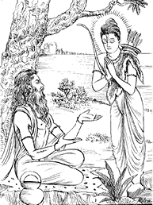
बकदाल्भ्यने कहा—श्रीराम! फाल्गुनके कृष्णपक्षमें जो ‘विजया’ नामकी एकादशी होती है, उसका व्रत करनेसे आपकी विजय होगी। निश्चय ही आप अपनी वानरसेनाके साथ समुद्रको पार कर लेंगे। राजन्! अब इस व्रतकी फलदायक विधि सुनिये। दशमीका दिन आनेपर एक कलश स्थापित करे। वह सोने, चाँदी, ताँबे अथवा मिट्टीका भी हो सकता है। उस कलशको जलसे भरकर उसमें पल्लव डाल दे। उसके ऊपर भगवान् नारायणके सुवर्णमय विग्रहकी स्थापना करे। फिर एकादशीके दिन प्रात:काल स्नान करे। कलशको पुन: स्थिरतापूर्वक स्थापित करे। माला, चन्दन, सुपारी तथा नारियल आदिके द्वारा विशेषरूपसे उसका पूजन करे। कलशके ऊपर सप्तधान्य और जौ रखे। गन्ध, धूप, दीप और भाँति-भाँतिके नैवेद्यसे पूजन करे। कलशके सामने बैठकर वह सारा दिन उत्तम कथा-वार्ता आदिके द्वारा व्यतीत करे तथा रातमें भी वहाँ जागरण करे। अखण्ड व्रतकी सिद्धिके लिये घीका दीपक जलाये। फिर द्वादशीके दिन सूर्योदय होनेपर उस कलशको किसी जलाशयके समीप—नदी, झरने या पोखरेके तटपर ले जाकर स्थापित करे और उसकी विधिवत् पूजा करके देव-प्रतिमासहित उस कलशको वेदवेत्ता ब्राह्मणके लिये दान कर दे। महाराज! कलशके साथ ही और भी बड़े-बड़े दान देने चाहिये। श्रीराम! आप अपने यूथपतियोंके साथ इसी विधिसे प्रयत्नपूर्वक ‘विजया’ का व्रत कीजिये। इससे आपकी विजय होगी।
ब्रह्माजी कहते हैं—नारद! यह सुनकर श्रीरामचन्द्रजीने मुनिके कथनानुसार उस समय ‘विजया’ एकादशीका व्रत किया। उस व्रतके करनेसे श्रीरामचन्द्रजी विजयी हुए। उन्होंने संग्राममें रावणको मारा, लंकापर विजय पायी और सीताको प्राप्त किया। बेटा! जो मनुष्य इस विधिसे व्रत करते हैं, उन्हें इस लोकमें विजय प्राप्त होती है और उनका परलोक भी अक्षय बना रहता है।
भगवान् श्रीकृष्ण कहते हैं—युधिष्ठिर! इस कारण ‘विजया’ का व्रत करना चाहिये। इस प्रसंगको पढ़ने और सुननेसे वाजपेय-यज्ञका फल मिलता है।
फाल्गुनमास शुक्लपक्षकी ‘आमलकी’ एकादशीका माहात्म्य
युधिष्ठिरने कहा—श्रीकृष्ण! मैंने विजया एकादशीका माहात्म्य, जो महान् फल देनेवाला है, सुन लिया। अब फाल्गुन शुक्लपक्षकी एकादशीका नाम और माहात्म्य बतानेकी कृपा कीजिये।
भगवान् श्रीकृष्ण बोले—महाभाग धर्मनन्दन! सुनो—तुम्हें इस समय वह प्रसंग सुनाता हूँ, जिसे राजा मान्धाताके पूछनेपर महात्मा वसिष्ठने कहा था। फाल्गुन शुक्लपक्षकी एकादशीका नाम ‘आमलकी’ है। इसका पवित्र व्रत विष्णुलोककी प्राप्ति करानेवाला है।
मान्धाताने पूछा—द्विजश्रेष्ठ! यह ‘आमलकी’ कब उत्पन्न हुई, मुझे बताइये।
वसिष्ठजीने कहा—महाभाग! सुनो—पृथ्वीपर ‘आमलकी’ की उत्पत्ति किस प्रकार हुई, यह बताता हूँ। आमलकी महान् वृक्ष है, जो सब पापोंका नाश करनेवाला है। भगवान् विष्णुके थूकनेपर उनके मुखसे चन्द्रमाके समान कान्तिमान् एक विन्दु प्रकट हुआ। वह विन्दु पृथ्वीपर गिरा। उसीसे आमलकी (आँवले)-का महान् वृक्ष उत्पन्न हुआ। यह सभी वृक्षोंका आदिभूत कहलाता है। इसी समय समस्त प्रजाकी सृष्टि करनेके लिये भगवान्ने ब्रह्माजीको उत्पन्न किया। उन्हींसे इन प्रजाओंकी सृष्टि हुई। देवता, दानव, गन्धर्व, यक्ष, राक्षस, नाग तथा निर्मल अन्त:करणवाले महर्षियोंको ब्रह्माजीने जन्म दिया। उनमेंसे देवता और ऋषि उस स्थानपर आये, जहाँ विष्णुप्रिया आमलकीका वृक्ष था। महाभाग! उसे देखकर देवताओंको बड़ा विस्मय हुआ। वे एक-दूसरेपर दृष्टिपात करते हुए उत्कण्ठापूर्वक उस वृक्षकी ओर देखने लगे और खड़े-खड़े सोचने लगे कि प्लक्ष (पाकर) आदि वृक्ष तो पूर्व कल्पकी ही भाँति हैं, जो सब-के-सब हमारे परिचित हैं, किन्तु इस वृक्षको हम नहीं जानते। उन्हें इस प्रकार चिन्ता करते देख आकाशवाणी हुई—‘महर्षियो! यह सर्वश्रेष्ठ आमलकीका वृक्ष है, जो विष्णुको प्रिय है। इसके स्मरणमात्रसे गोदानका फल मिलता है। स्पर्श करनेसे इससे दूना और फल भक्षण करनेसे तिगुना पुण्य प्राप्त होता है। इसलिये सदा प्रयत्नपूर्वक आमलकीका सेवन करना चाहिये। यह सब पापोंको हरनेवाला वैष्णव वृक्ष बताया गया है। इसके मूलमें विष्णु, उसके ऊपर ब्रह्मा, स्कन्धमें परमेश्वर भगवान् रुद्र, शाखाओंमें मुनि, टहनियोंमें देवता, पत्तोंमें वसु, फूलोंमें मरुद्गण तथा फलोंमें समस्त प्रजापति वास करते हैं। आमलकी सर्वदेवमयी बतायी गयी है।* अत: विष्णुभक्त पुरुषोंके लिये यह परम पूज्य है।’
* तस्या मूले स्थितो विष्णुस्तदूर्ध्वं च पितामह:।
स्कन्धे च भगवान् रुद्र: संस्थित: परमेश्वर:॥
शाखासु मुनय: सर्वे प्रशाखासु च देवता:।
पर्णेषु वसवो देवा: पुष्पेषु मरुतस्तथा॥
प्रजानां पतय: सर्वे फलेष्वेव व्यवस्थिता:।
सर्वदेवमयी ह्येषा धात्री च कथिता मया॥
(४७।२०—२३)
ऋषि बोले—(अव्यक्त स्वरूपसे बोलनेवाले महापुरुष!) हमलोग आपको क्या समझें—आप कौन हैं? देवता हैं या कोई और? हमें ठीक-ठीक बताइये।
आकाशवाणी हुई—जो सम्पूर्ण भूतोंके कर्ता और समस्त भुवनोंके स्रष्टा हैं, जिन्हें विद्वान् पुरुष भी कठिनतासे देख पाते हैं, वही सनातन विष्णु मैं हूँ।
देवाधिदेव भगवान् विष्णुका कथन सुनकर उन ब्रह्मकुमार महर्षियोंके नेत्र आश्चर्यसे चकित हो उठे। उन्हें बड़ा विस्मय हुआ। वे आदि-अन्तरहित भगवान्की स्तुति करने लगे।
ऋषि बोले—सम्पूर्ण भूतोंके आत्मभूत, आत्मा एवं परमात्माको नमस्कार है। अपनी महिमासे कभी च्युत न होनेवाले अच्युतको नित्य प्रणाम है। अन्तरहित परमेश्वरको बारम्बार प्रणाम है। दामोदर, कवि (सर्वज्ञ) और यज्ञेश्वरको नमस्कार है। मायापते! आपको प्रणाम है। आप विश्वके स्वामी हैं; आपको नमस्कार है।
ऋषियोंके इस प्रकार स्तुुति करनेपर भगवान् श्रीहरि सन्तुष्ट हुए और बोले—‘महर्षियो! तुम्हें कौन-सा अभीष्ट वरदान दूँ?’
ऋषि बोले—भगवन्! यदि आप सन्तुष्ट हैं तो हमलोगोंके हितके लिये कोई ऐसा व्रत बतलाइये, जो स्वर्ग और मोक्षरूपी फल प्रदान करनेवाला हो।
श्रीविष्णु बोले—महर्षियो! फाल्गुन शुक्लपक्षमें यदि पुष्य नक्षत्रसे युक्त द्वादशी हो तो वह महान् पुण्य देनेवाली और बड़े-बड़े पातकोंका नाश करनेवाली होती है। द्विजवरो! उसमें जो विशेष कर्तव्य है, उसको सुनो। आमलकी एकादशीमें आँवलेके वृक्षके पास जाकर वहाँ रात्रिमें जागरण करना चाहिये। इससे मनुष्य सब पापोंसे छूट जाता और सहस्र गोदानोंका फल प्राप्त करता है। विप्रगण! यह व्रतोंमें उत्तम व्रत है, जिसे मैंने तुमलोगोंको बताया है।
ऋषि बोले—भगवन्! इस व्रतकी विधि बतलाइये। यह कैसे पूर्ण होता है? इसके देवता, नमस्कार और मन्त्र कौन-से बताये गये हैं? उस समय स्नान और दान कैसे किया जाता है? पूजनकी कौन-सी विधि है तथा उसके लिये मन्त्र क्या है? इन सब बातोंका यथार्थ रूपसे वर्णन कीजिये।
भगवान् विष्णुने कहा—द्विजवरो! इस व्रतकी जो उत्तम विधि है, उसको श्रवण करो! एकादशीको प्रात:काल दन्तधावन करके यह संकल्प करे कि ‘हे पुण्डरीकाक्ष! हे अच्युत! मैं एकादशीको निराहार रहकर दूसरे दिन भोजन करूँगा। आप मुझे शरणमें रखें।’ ऐसा नियम लेनेके बाद पतित, चोर, पाखण्डी, दुराचारी, मर्यादा भंग करनेवाले तथा गुरुपत्नीगामी मनुष्योंसे वार्तालाप न करे। अपने मनको वशमें रखते हुए नदीमें, पोखरेमें, कुएँपर अथवा घरमें ही स्नान करे। स्नानके पहले शरीरमें मिट्टी लगाये।
मृत्तिका लगानेका मन्त्र
अश्वक्रान्ते रथक्रान्ते विष्णुक्रान्ते वसुन्धरे।
मृत्तिके हर मे पापं जन्मकोट्यां समर्जितम्॥
(४७।४३)
‘वसुन्धरे! तुम्हारे ऊपर अश्व और रथ चला करते हैं तथा वामन अवतारके समय भगवान् विष्णुने भी तुम्हें अपने पैरोंसे नापा था। मृत्तिके! मैंने करोड़ों जन्मोंमें जो पाप किये हैं, मेरे उन सब पापोंको हर लो।’
स्नान-मन्त्र
त्वं मात: सर्वभूतानां जीवनं तत्तु रक्षकम्।
स्वेदजोद्भिज्जजातीनां रसानां पतये नम:॥
स्नातोऽहं सर्वतीर्थेषु ह्रदप्रस्रवणेषु च।
नदीषु देवखातेषु इदं स्नानं तु मे भवेत्॥
(४७।४४-४५)
‘जलकी अधिष्ठात्री देवी! मात:! तुम सम्पूर्ण भूतोंके लिये जीवन हो। वही जीवन, जो स्वेदज और उद्भिज्ज जातिके जीवोंका भी रक्षक है। तुम रसोंकी स्वामिनी हो। तुम्हें नमस्कार है। आज मैं सम्पूर्ण तीर्थों, कुण्डों, झरनों, नदियों और देव-सम्बन्धी सरोवरोंमें स्नान कर चुका। मेरा यह स्नान उक्त सभी स्नानोंका फल देनेवाला हो।’
विद्वान् पुरुषको चाहिये कि वह परशुरामजीकी सोनेकी प्रतिमा बनवाये। प्रतिमा अपनी शक्ति और धनके अनुसार एक या आधे माशे सुवर्णकी होनी चाहिये। स्नानके पश्चात् घर आकर पूजा और हवन करे। इसके बाद सब प्रकारकी सामग्री लेकर आँवलेके वृक्षके पास जाय। वहाँ वृक्षके चारों ओरकी जमीन झाड़-बुहार, लीप-पोतकर शुद्ध करे। शुद्ध की हुई भूमिमें मन्त्रपाठपूर्वक जलसे भरे हुए नवीन कलशकी स्थापना करे। कलशमें पंचरत्न और दिव्य गन्ध आदि छोड़ दे। श्वेत चन्दनसे उसको चर्चित करे। कण्ठमें फूलकी माला पहनाये। सब प्रकारके धूपकी सुगन्ध फैलाये। जलते हुए दीपकोंकी श्रेणी सजाकर रखे। तात्पर्य यह कि सब ओरसे सुन्दर एवं मनोहर दृश्य उपस्थित करे। पूजाके लिये नवीन छाता, जूता और वस्त्र भी मँगाकर रखे। कलशके ऊपर एक पात्र रखकर उसे दिव्य लाजों (खीलों)-से भर दे। फिर उसके ऊपर सुवर्णमय परशुरामजीकी स्थापना करे। ‘विशोकाय नम:’ कहकर उनके चरणोंकी, ‘विश्वरूपिणे नम:’ से दोनों घुटनोंकी, ‘उग्राय नम:’ से जाँघोंकी, ‘दामोदराय नम:’ से कटिभागकी, ‘पद्मनाभाय नम:’ से उदरकी, ‘श्रीवत्सधारिणे नम:’ से वक्ष:स्थलकी, ‘चक्रिणे नम:’ से बायीं बाँहकी, ‘गदिने नम:’ से दाहिनी बाँहकी, ‘वैकुण्ठाय नम:’ से कण्ठकी, ‘यज्ञमुखाय नम:’ से मुखकी, ‘विशोकनिधये नम:’ से नासिकाकी, ‘वासुदेवाय नम:’ से नेत्रोंकी, ‘वामनाय नम:’ से ललाटकी, ‘सर्वात्मने नम:’ से सम्पूर्ण अंगों तथा मस्तककी पूजा करे। ये ही पूजाके मन्त्र हैं। तदनन्तर भक्तियुक्त चित्तसे शुद्ध फलके द्वारा देवाधिदेव परशुरामजीको अर्घ्य प्रदान करे। अर्घ्यका मन्त्र इस प्रकार है—
नमस्ते देवदेवेश जामदग्न्य नमोऽस्तु ते।
गृहाणार्घ्यमिमं दत्तमामलक्या युतं हरे॥
(४७।५७)
‘देवदेवेश्वर! जमदग्निनन्दन! श्रीविष्णुस्वरूप परशुरामजी! आपको नमस्कार है, नमस्कार है। आँवलेके फलके साथ दिया हुआ मेरा यह अर्घ्य ग्रहण कीजिये।’
तदनन्तर भक्तियुक्त चित्तसे जागरण करे। नृत्य, संगीत, वाद्य, धार्मिक उपाख्यान तथा श्रीविष्णुसम्बन्धिनी कथा-वार्ता आदिके द्वारा वह रात्रि व्यतीत करे। उसके बाद भगवान् विष्णुके नाम ले-लेकर आमलकी-वृक्षकी परिक्रमा एक सौ आठ या अट्ठाईस बार करे। फिर सबेरा होनेपर श्रीहरिकी आरती करे। ब्राह्मणकी पूजा करके वहाँकी सब सामग्री उसे निवेदन कर दे। परशुरामजीका कलश, दो वस्त्र, जूता आदि सभी वस्तुएँ दान कर दे और यह भावना करे कि ‘परशुरामजीके स्वरूपमें भगवान् विष्णु मुझपर प्रसन्न हों।’ तत्पश्चात् आमलकीका स्पर्श करके उसकी प्रदक्षिणा करे और स्नान करनेके बाद विधिपूर्वक ब्राह्मणोंको भोजन कराये। तदनन्तर कुटुम्बियोंके साथ बैठकर स्वयं भी भोजन करे। ऐसा करनेसे जो पुण्य होता है, वह सब बतलाता हूँ; सुनो। सम्पूर्ण तीर्थोंके सेवनसे जो पुण्य प्राप्त होता है तथा सब प्रकारके दान देनेसे जो फल मिलता है, वह सब उपर्युक्त विधिके पालनसे सुलभ होता है। समस्त यज्ञोंकी अपेक्षा भी अधिक फल मिलता है; इसमें तनिक भी संदेह नहीं है। यह व्रत सब व्रतोंमें उत्तम है, जिसका मैंने तुमसे पूरा-पूरा वर्णन किया है।
वसिष्ठजी कहते हैं—महाराज! इतना कहकर देवेश्वर भगवान् विष्णु वहीं अन्तर्धान हो गये। तत्पश्चात् उन समस्त महर्षियोंने उक्त व्रतका पूर्णरूपसे पालन किया। नृपश्रेष्ठ! इसी प्रकार तुम्हें भी इस व्रतका अनुष्ठान करना चाहिये।
भगवान् श्रीकृष्ण कहते हैं—युधिष्ठिर! यह दुर्धर्ष व्रत मनुष्यको सब पापोंसे मुक्त करनेवाला है।
चैत्रमास कृष्णपक्षकी ‘पापमोचनी’ एकादशीका माहात्म्य
युधिष्ठिरने पूछा—भगवन्! फाल्गुन शुक्लपक्षकी आमलकी एकादशीका माहात्म्य मैंने सुना। अब चैत्र कृष्णपक्षकी एकादशीका क्या नाम है, यह बतानेकी कृपा कीजिये।
भगवान् श्रीकृष्ण बोले—राजेन्द्र! सुनो—मैं इस विषयमें एक पापनाशक उपाख्यान सुनाऊँगा, जिसे चक्रवर्ती नरेश मान्धाताके पूछनेपर महर्षि लोमशने कहा था।
मान्धाता बोले—भगवन्! मैं लोगोंके हितकी इच्छासे यह सुनना चाहता हूँ कि चैत्रमासके कृष्णपक्षमें किस नामकी एकादशी होती है? उसकी क्या विधि है तथा उससे किस फलकी प्राप्ति होती है? कृपया ये सब बातें बताइये।
लोमशजीने कहा—नृपश्रेष्ठ! पूर्वकालकी बात है, अप्सराओंसे सेवित चैत्ररथ नामक वनमें, जहाँ गन्धर्वोंकी कन्याएँ अपने किंकरोंके साथ बाजे बजाती हुई विहार करती हैं, मंजुघोषा नामक अप्सरा मुनिवर मेधावीको मोहित करनेके लिये गयी। वे महर्षि उसी वनमें रहकर ब्रह्मचर्यका पालन करते थे। मंजुघोषा मुनिके भयसे आश्रमसे एक कोस दूर ही ठहर गयी और सुन्दर ढंगसे वीणा बजाती हुई मधुर गीत गाने लगी। मुनिश्रेष्ठ मेधावी घूमते हुए उधर जा निकले और उस सुन्दरी अप्सराको इस प्रकार गान करते देख सेनासहित कामदेवसे परास्त होकर बरबस मोहके वशीभूत हो गये। मुनिकी ऐसी अवस्था देख मंजुघोषा उनके समीप आयी और वीणा नीचे रखकर उनका आलिंगन करने लगी। मेधावी भी उसके साथ रमण करने लगे। कामवश रमण करते हुए उन्हें रात और दिनका भी भान न रहा। इस प्रकार मुनिजनोचित सदाचारका लोप करके अप्सराके साथ रमण करते उन्हें बहुत दिन व्यतीत हो गये। मंजुघोषा देवलोकमें जानेको तैयार हुई। जाते समय उसने मुनिश्रेष्ठ मेधावीसे कहा—‘ब्रह्मन्! अब मुझे अपने देश जानेकी आज्ञा दीजिये।’
मेधावी बोले—देवी! जबतक सबेरेकी सन्ध्या न हो जाय तबतक मेरे ही पास ठहरो।
अप्सराने कहा—विप्रवर! अबतक न जाने कितनी सन्ध्या चली गयी! मुझपर कृपा करके बीते हुए समयका विचार तो कीजिये।
लोमशजी कहते हैं—राजन्! अप्सराकी बात सुनकर मेधावीके नेत्र आश्चर्यसे चकित हो उठे। उस समय उन्होंने बीते हुए समयका हिसाब लगाया तो मालूम हुआ कि उसके साथ रहते सत्तावन वर्ष हो गये। उसे अपनी तपस्याका विनाश करनेवाली जानकर मुनिको उसपर बड़ा क्रोध हुआ। उन्होंने शाप देते हुए कहा—‘पापिनी! तू पिशाची हो जा।’ मुनिके शापसे दग्ध होकर वह विनयसे नतमस्तक हो बोली—‘विप्रवर! मेरे शापका उद्धार कीजिये। सात वाक्य बोलने या सात पद साथ-साथ चलनेमात्रसे ही सत्पुरुषोंके साथ मैत्री हो जाती है। ब्रह्मन्! मैंने तो आपके साथ अनेक वर्ष व्यतीत किये हैं; अत: स्वामिन्! मुझपर कृपा कीजिये।’
मुनि बोले—भद्रे! मेरी बात सुनो—यह शापसे उद्धार करनेवाली है। क्या करूँ? तुमने मेरी बहुत बड़ी तपस्या नष्ट कर डाली है। चैत्र कृष्णपक्षमें जो शुभ एकादशी आती है उसका नाम है ‘पापमोचनी’। वह सब पापोंका क्षय करनेवाली है। सुन्दरी! उसीका व्रत करनेपर तुम्हारी पिशाचता दूर होगी।
ऐसा कहकर मेधावी अपने पिता मुनिवर च्यवनके आश्रमपर गये। उन्हें आया देख च्यवनने पूछा—‘बेटा! यह क्या किया? तुमने तो अपने पुण्यका नाश कर डाला!’
मेधावी बोले—पिताजी! मैंने अप्सराके साथ रमण करनेका पातक किया है। कोई ऐसा प्रायश्चित्त बताइये, जिससे पापका नाश हो जाय।
च्यवनने कहा—बेटा! चैत्र कृष्णपक्षमें जो पापमोचनी एकादशी होती है, उसका व्रत करनेपर पापराशिका विनाश हो जायगा।
पिताका यह कथन सुनकर मेधावीने उस व्रतका अनुष्ठान किया। इससे उनका पाप नष्ट हो गया और वे पुन: तपस्यासे परिपूर्ण हो गये। इसी प्रकार मंजुघोषाने भी इस उत्तम व्रतका पालन किया। ‘पापमोचनी’ का व्रत करनेके कारण वह पिशाच-योनिसे मुक्त हुई और दिव्य रूपधारिणी श्रेष्ठ अप्सरा होकर स्वर्गलोकमें चली गयी। राजन्! जो श्रेष्ठ मनुष्य पापमोचनी एकादशीका व्रत करते हैं, उनका सारा पाप नष्ट हो जाता है। इसको पढ़ने और सुननेसे सहस्र गोदानका फल मिलता है। ब्रह्महत्या, सुवर्णकी चोरी, सुरापान और गुरुपत्नीगमन करनेवाले महापातकी भी इस व्रतके करनेसे पापमुक्त हो जाते हैं। यह व्रत बहुत पुण्यमय है।
चैत्रमास शुक्लपक्षकी ‘कामदा’ एकादशीका माहात्म्य
युधिष्ठिरने पूछा—वासुदेव! आपको नमस्कार है। अब मेरे सामने यह बताइये कि चैत्र शुक्लपक्षमें किस नामकी एकादशी होती है?
भगवान् श्रीकृष्ण बोले—राजन्! एकाग्रचित्त होकर यह पुरातन कथा सुनो, जिसे वसिष्ठजीने दिलीपके पूछनेपर कहा था।
दिलीपने पूछा—भगवन्! मैं एक बात सुनना चाहता हूँ। चैत्रमासके शुक्लपक्षमें किस नामकी एकादशी होती है?
वसिष्ठजी बोले—राजन्! चैत्र शुक्लपक्षमें ‘कामदा’ नामकी एकादशी होती है। वह परम पुण्यमयी है। पापरूपी ईंधनके लिये तो वह दावानल ही है। प्राचीन कालकी बात है, नागपुर नामका एक सुन्दर नगर था, जहाँ सोनेके महल बने हुए थे। उस नगरमें पुण्डरीक आदि महा भयंकर नाग निवास करते थे। पुण्डरीक नामका नाग उन दिनों वहाँ राज्य करता था। गन्धर्व, किन्नर और अप्सराएँ भी उस नगरीका सेवन करती थीं। वहाँ एक श्रेष्ठ अप्सरा थी, जिसका नाम ललिता था। उसके साथ ललित नामवाला गन्धर्व भी था। वे दोनों पति-पत्नीके रूपमें रहते थे। दोनों ही परस्पर कामसे पीड़ित रहा करते थे। ललिताके हृदयमें सदा पतिकी ही मूर्ति बसी रहती थी और ललितके हृदयमें सुन्दरी ललिताका नित्य निवास था। एक दिनकी बात है, नागराज पुण्डरीक राजसभामें बैठकर मनोरंजन कर रहा था। उस समय ललितका गान हो रहा था। किन्तु उसके साथ उसकी प्यारी ललिता नहीं थी। गाते-गाते उसे ललिताका स्मरण हो आया। अत: उसके पैरोंकी गति रुक गयी और जीभ लड़खड़ाने लगी। नागोंमें श्रेष्ठ कर्कोटकको ललितके मनका सन्ताप ज्ञात हो गया; अत: उसने राजा पुण्डरीकको उसके पैरोंकी गति रुकने एवं गानमें त्रुटि होनेकी बात बता दी। कर्कोटककी बात सुनकर नागराज पुण्डरीककी आँखें क्रोधसे लाल हो गयीं। उसने गाते हुए कामातुर ललितको शाप दिया—‘दुर्बुद्धे! तू मेरे सामने गान करते समय भी पत्नीके वशीभूत हो गया, इसलिये राक्षस हो जा।’
महाराज पुण्डरीकके इतना कहते ही वह गन्धर्व राक्षस हो गया। भयंकर मुख, विकराल आँखें और देखनेमात्रसे भय उपजानेवाला रूप। ऐसा राक्षस होकर वह कर्मका फल भोगने लगा। ललिता अपने पतिकी विकराल आकृति देख मन-ही-मन बहुत चिन्तित हुई। भारी दु:खसे कष्ट पाने लगी। सोचने लगी, ‘क्या करूँ? कहाँ जाऊँ? मेरे पति पापसे कष्ट पा रहे हैं।’ वह रोती हुई घने जंगलोंमें पतिके पीछे-पीछे घूमने लगी। वनमें उसे एक सुन्दर आश्रम दिखायी दिया, जहाँ एक शान्त मुनि बैठे हुए थे। उनका किसी भी प्राणीके साथ वैर-विरोध नहीं था। ललिता शीघ्रताके साथ वहाँ गयी और मुनिको प्रणाम करके उनके सामने खड़ी हुई।
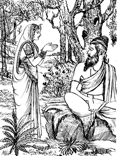
मुनि बड़े दयालु थे। उस दु:खिनीको देखकर वे इस प्रकार बोले—
‘शुभे! तुम कौन हो? कहाँसे यहाँ आयी हो? मेरे सामने सच-सच बताओ।’
ललिताने कहा—‘महामुने! वीरधन्वा नामवाले एक गन्धर्व हैं। मैं उन्हीं महात्माकी पुत्री हूँ। मेरा नाम ललिता है। मेरे स्वामी अपने पाप-दोषके कारण राक्षस हो गये हैं। उनकी यह अवस्था देखकर मुझे चैन नहीं है। ब्रह्मन्! इस समय मेरा जो कर्तव्य हो, वह बताइये। विप्रवर! जिस पुण्यके द्वारा मेरे पति राक्षसभावसे छुटकारा पा जायँ, उसका उपदेश कीजिये।’
ऋषि बोले—भद्रे! इस समय चैत्रमासके शुक्लपक्षकी ‘कामदा’ नामक एकादशी तिथि है, जो सब पापोंको हरनेवाली और उत्तम है। तुम उसीका विधिपूर्वक व्रत करो और इस व्रतका जो पुण्य हो, उसे अपने स्वामीको दे डालो। पुण्य देनेपर क्षणभरमें ही उसके शापका दोष दूर हो जायगा।
राजन्! मुनिका यह वचन सुनकर ललिताको बड़ा हर्ष हुआ। उसने एकादशीको उपवास करके द्वादशीके दिन उन ब्रह्मर्षिके समीप ही भगवान् वासुदेवके [श्रीविग्रहके] समक्ष अपने पतिके उद्धारके लिये यह वचन कहा—‘मैंने जो यह कामदा एकादशीका उपवासव्रत किया है, उसके पुण्यके प्रभावसे मेरे पतिका राक्षस-भाव दूर हो जाय।’
वसिष्ठजी कहते हैं—ललिताके इतना कहते ही उसी क्षण ललितका पाप दूर हो गया। उसने दिव्य देह धारण कर लिया। राक्षस-भाव चला गया और पुन: गन्धर्वत्वकी प्राप्ति हुई। नृपश्रेष्ठ! वे दोनों पति-पत्नी ‘कामदा’ के प्रभावसे पहलेकी अपेक्षा भी अधिक सुन्दर रूप धारण करके विमानपर आरूढ़ हो अत्यन्त शोभा पाने लगे। यह जानकर इस एकादशीके व्रतका यत्नपूर्वक पालन करना चाहिये। मैंने लोगोंके हितके लिये तुम्हारे सामने इस व्रतका वर्णन किया है। कामदा एकादशी ब्रह्महत्या आदि पापों तथा पिशाचत्व आदि दोषोंका भी नाश करनेवाली है। राजन्! इसके पढ़ने और सुननेसे वाजपेय-यज्ञका फल मिलता है।
वैशाखमास कृष्णपक्षकी ‘वरूथिनी’ एकादशीका माहात्म्य
युधिष्ठिरने पूछा—वासुदेव! आपको नमस्कार है। वैशाख-मासके कृष्णपक्षमें किस नामकी एकादशी होती है? उसकी महिमा बताइये।
भगवान् श्रीकृष्ण बोले—राजन्! वैशाख कृष्णपक्षकी एकादशी ‘वरूथिनी’ के नामसे प्रसिद्ध है। यह इस लोक और परलोकमें भी सौभाग्य प्रदान करनेवाली है। ‘वरूथिनी’ के व्रतसे ही सदा सौख्यका लाभ और पापकी हानि होती है। यह समस्त लोकोंको भोग और मोक्ष प्रदान करनेवाली है। ‘वरूथिनी’ के ही व्रतसे मान्धाता तथा धुन्धुमार आदि अन्य अनेक राजा स्वर्गलोकको प्राप्त हुए हैं। जो दस हजार वर्षोंतक तपस्या करता है, उसके समान ही फल ‘वरूथिनी’ के व्रतसे भी मनुष्य प्राप्त कर लेता है। नृपश्रेष्ठ! घोड़ेके दानसे हाथीका दान श्रेष्ठ है। भूमिदान उससे भी बड़ा है। भूमिदानसे भी अधिक महत्त्व तिलदानका है। तिलदानसे बढ़कर स्वर्णदान और स्वर्णदानसे बढ़कर अन्नदान है, क्योंकि देवता, पितर तथा मनुष्योंको अन्नसे ही तृप्ति होती है। विद्वान् पुरुषोंने कन्यादानको भी अन्नदानके ही समान बताया है। कन्यादानके तुल्य ही धेनुका दान है—यह साक्षात् भगवान्का कथन है। ऊपर बताये हुए सब दानोंसे बड़ा विद्यादान है। मनुष्य वरूथिनी एकादशीका व्रत करके विद्यादानका भी फल प्राप्त कर लेता है। जो लोग पापसे मोहित होकर कन्याके धनसे जीविका चलाते हैं, वे पुण्यका क्षय होनेपर यातनामय नरकमें जाते हैं। अत: सर्वथा प्रयत्न करके कन्याके धनसे बचना चाहिये—उसे अपने काममें नहीं लाना चाहिये।*
* कन्यावित्तेन जीवन्ति ये नरा: पापमोहिता:।
पुण्यक्षयात्ते गच्छन्ति निरयं यातनामयम्।
तस्मात् सर्वप्रयत्नेन न ग्राह्यं कन्यकाधनम्॥
(५०।१४-१५)
जो अपनी शक्तिके अनुसार आभूषणोंसे विभूषित करके पवित्र भावसे कन्याका दान करता है, उसके पुण्यकी संख्या बतानेमें चित्रगुप्त भी असमर्थ हैं। वरूथिनी एकादशी करके भी मनुष्य उसीके समान फल प्राप्त करता है। व्रत करनेवाला वैष्णव पुरुष दशमी तिथिको काँस, उड़द, मसूर, चना, कोदो, शाक, मधु, दूसरेका अन्न, दो बार भोजन तथा मैथुन—इन दस वस्तुओंका परित्याग कर दे।१ एकादशीको जुआ खेलना, नींद लेना, पान खाना, दाँतुन करना, दूसरेकी निन्दा करना, चुगली खाना, चोरी, हिंसा, मैथुन, क्रोध तथा असत्य-भाषण—इन ग्यारह बातोंको त्याग दे।२
१-कांस्यं माषं मसूरांश्च चणकान् कोद्रवांस्तथा।
शाकं मधु परान्नं च पुनर्भोजनमैथुने॥
वैष्णवो व्रतकर्ता च दशम्यां दशवर्जयेत्॥
(५०।१७-१८)
२-द्यूतक्रीडां च निद्रां च ताम्बूलं दन्तधावनम्।
परापवादं पैशुन्ये स्तेयं हिंसां तथा रतिम्॥
क्रोधं चानृतवाक्यानि ह्येकादश्यां विवर्जयेत्॥
(५०।१९-२०)
द्वादशीको काँस, उड़द, शराब, मधु, तेल, पतितोंसे वार्तालाप, व्यायाम, परदेशगमन, दो बार भोजन, मैथुन, बैलकी पीठपर सवारी और मसूर—इन बारह वस्तुओंका त्याग करे।* राजन्! इस विधिसे वरूथिनी एकादशी की जाती है। रातको जागरण करके जो भगवान् मधुसूदनका पूजन करते हैं, वे सब पापोंसे मुक्त हो परमगतिको प्राप्त होते हैं। अत: पापभीरु मनुष्योंको पूर्ण प्रयत्न करके इस एकादशीका व्रत करना चाहिये। यमराजसे डरनेवाला मनुष्य अवश्य ‘वरूथिनी’ का व्रत करे। राजन्! इसके पढ़ने और सुननेसे सहस्र गोदानका फल मिलता है और मनुष्य सब पापोंसे मुक्त होकर विष्णुलोकमें प्रतिष्ठित होता है।
* कांस्यं माषं सुरां क्षौद्रं तैलं पतितभाषणम्॥
व्यायामं च प्रवासं च पुनर्भोजनमैथुने।
वृषपृष्ठं मसूरान्नं द्वादश्यां परिवर्जयेत्॥
(५०।२०-२१)
वैशाखमास शुक्लपक्षकी ‘मोहिनी’ एकादशीका माहात्म्य
युधिष्ठिरने पूछा—जनार्दन! वैशाखमासके शुक्लपक्षमें किस नामकी एकादशी होती है? उसका क्या फल होता है? तथा उसके लिये कौन-सी विधि है?
भगवान् श्रीकृष्ण बोले—महाराज! पूर्वकालमें परम बुद्धिमान् श्रीरामचन्द्रजीने महर्षि वसिष्ठसे यही बात पूछी थी, जिसे आज तुम मुझसे पूछ रहे हो।
श्रीरामने कहा—भगवन्! जो समस्त पापोंका क्षय तथा सब प्रकारके दु:खोंका निवारण करनेवाला व्रतोंमें उत्तम व्रत हो, उसे मैं सुनना चाहता हूँ।
वसिष्ठजी बोले—श्रीराम! तुमने बहुत उत्तम बात पूछी है। मनुष्य तुम्हारा नाम लेनेसे ही सब पापोंसे शुद्ध हो जाता है। तथापि लोगोंके हितकी इच्छासे मैं पवित्रोंमें पवित्र उत्तम व्रतका वर्णन करूँगा। वैशाखमासके शुक्लपक्षमें जो एकादशी होती है, उसका नाम मोहिनी है। वह सब पापोंको हरनेवाली और उत्तम है। उस व्रतके प्रभावसे मनुष्य मोहजाल तथा पातक-समूहसे छुटकारा पा जाते हैं।
सरस्वती नदीके रमणीय तटपर भद्रावती नामकी सुन्दर नगरी है। वहाँ धृतिमान् नामक राजा, जो चन्द्रवंशमें उत्पन्न और सत्यप्रतिज्ञ थे, राज्य करते थे। उसी नगरमें एक वैश्य रहता था, जो धन-धान्यसे परिपूर्ण और समृद्धिशाली था। उसका नाम था धनपाल। वह सदा पुण्यकर्ममें ही लगा रहता था। दूसरोंके लिये पौंसला, कुआँ, मठ, बगीचा, पोखरा और घर बनवाया करता था। भगवान् श्रीविष्णुकी भक्तिमें उसका हार्दिक अनुराग था। वह सदा शान्त रहता था। उसके पाँच पुत्र थे—सुमना, द्युतिमान्, मेधावी, सुकृत तथा धृष्टबुद्धि। धृष्टबुुद्धि पाँचवाँ था। वह सदा बड़े-बड़े पापोंमें ही संलग्न रहता था। जुए आदि दुर्व्यसनोंमें उसकी बड़ी आसक्ति थी। वह वेश्याओंसे मिलनेके लिये लालायित रहता था। उसकी बुद्धि न तो देवताओंके पूजनमें लगती थी और न पितरों तथा ब्राह्मणोंके सत्कारमें। वह दुष्टात्मा अन्यायके मार्गपर चलकर पिताका धन बरबाद किया करता था। एक दिन वह वेश्याके गलेमें बाँह डाले चौराहेपर घूमता देखा गया। तब पिताने उसे घरसे निकाल दिया तथा बन्धु-बान्धवोंने भी उसका परित्याग कर दिया। अब वह दिन-रात दु:ख और शोकमें डूबा तथा कष्ट-पर-कष्ट उठाता हुआ इधर-उधर भटकने लगा। एक दिन किसी पुण्यके उदय होनेसे वह महर्षि कौण्डिन्यके आश्रमपर जा पहुँचा। वैशाखका महीना था। तपोधन कौण्डिन्य गंगाजीमें स्नान करके आये थे। धृष्टबुद्धि शोकके भारसे पीड़ित हो मुनिवर कौण्डिन्यके पास गया और हाथ जोड़ सामने खड़ा होकर बोला—‘ब्रह्मन्! द्विजश्रेष्ठ! मुझपर दया करके कोई ऐसा व्रत बताइये, जिसके पुण्यके प्रभावसे मेरी मुक्ति हो।’
कौण्डिन्य बोले—वैशाखके शुक्लपक्षमें मोहिनी नामसे प्रसिद्ध एकादशीका व्रत करो। मोहिनीको उपवास करनेपर प्राणियोंके अनेक जन्मोंके किये हुए मेरुपर्वत-जैसे महापाप भी नष्ट हो जाते हैं।
वसिष्ठजी कहते हैं—श्रीरामचन्द्र! मुनिका यह वचन सुनकर धृष्टबुद्धिका चित्त प्रसन्न हो गया। उसने कौण्डिन्यके उपदेशसे विधिपूर्वक मोहिनी एकादशीका व्रत किया। नृपश्रेष्ठ! इस व्रतके करनेसे वह निष्पाप हो गया और दिव्य देह धारणकर गरुड़पर आरूढ़ हो सब प्रकारके उपद्रवोंसे रहित श्रीविष्णुधामको चला गया। इस प्रकार यह मोहिनीका व्रत बहुत उत्तम है। इसके पढ़ने और सुननेसे सहस्र गोदानका फल मिलता है।
ज्येष्ठमास कृष्णपक्षकी ‘अपरा’ एकादशीका माहात्म्य
युधिष्ठिरने पूछा—जनार्दन! ज्येष्ठके कृष्णपक्षमें किस नामकी एकादशी होती है? मैं उसका माहात्म्य सुनना चाहता हूँ। उसे बतानेकी कृपा कीजिये।
भगवान् श्रीकृष्ण बोले—राजन्! तुमने सम्पूर्ण लोकोंके हितके लिये बहुत उत्तम बात पूछी है। राजेन्द्र! इस एकादशीका नाम ‘अपरा’ है। यह बहुत पुण्य प्रदान करनेवाली और बड़े-बड़े पातकोंका नाश करनेवाली है। ब्रह्महत्यासे दबा हुआ, गोत्रकी हत्या करनेवाला, गर्भस्थ बालकको मारनेवाला, परनिन्दक तथा परस्त्रीलम्पट पुरुष भी अपरा एकादशीके सेवनसे निश्चय ही पापरहित हो जाता है। जो झूठी गवाही देता, माप-तोलमें धोखा देता, बिना जाने ही नक्षत्रोंकी गणना करता और कूटनीतिसे आयुर्वेदका ज्ञाता बनकर वैद्यका काम करता है—ये सब नरकमें निवास करनेवाले प्राणी हैं, परन्तु अपरा एकादशीके सेवनसे ये भी पापरहित हो जाते हैं। यदि क्षत्रिय क्षात्रधर्मका परित्याग करके युद्धसे भागता है, तो वह क्षत्रियोचित धर्मसे भ्रष्ट होनेके कारण घोर नरकमें पड़ता है। जो शिष्य विद्या प्राप्त करके स्वयं ही गुरुकी निन्दा करता है, वह भी महापातकोंसे युक्त होकर भयंकर नरकमें गिरता है। किन्तु अपरा एकादशीके सेवनसे ऐसे मनुष्य भी सद्गतिको प्राप्त होते हैं।
माघमें जब सूर्य मकरराशिपर स्थित हों, उस समय प्र्रयागमें स्नान करनेवाले मनुष्योंको जो पुण्य होता है, काशीमें शिवरात्रिका व्रत करनेसे जो पुण्य प्राप्त होता है, गयामें पिण्डदान करके पितरोंको तृप्ति प्रदान करनेवाला पुरुष जिस पुण्यका भागी होता है, बृहस्पतिके सिंहराशिपर स्थित होनेपर गोदावरीमें स्नान करनेवाला मानव जिस फलको प्राप्त करता है, बदरिकाश्रमकी यात्राके समय भगवान् केदारके दर्शनसे तथा बदरीतीर्थके सेवनसे जो पुण्य-फल उपलब्ध होता है तथा सूर्यग्रहणके समय कुरुक्षेत्रमें दक्षिणासहित यज्ञ करके हाथी, घोड़ा और सुवर्ण-दान करनेसे जिस फलकी प्राप्ति होती है; अपरा एकादशीके सेवनसे भी मनुष्य वैसे ही फल प्राप्त करता है। ‘अपरा’ को उपवास करके भगवान् वामनकी पूजा करनेसे मनुष्य सब पापोंसे मुक्त हो श्रीविष्णुलोकमें प्रतिष्ठित होता है। इसको पढ़ने और सुननेसे सहस्र गोदानका फल मिलता है।
ज्येष्ठमास शुक्लपक्षकी ‘निर्जला’ एकादशीका माहात्म्य
युधिष्ठिरने कहा—जनार्दन! ‘अपरा’ का सारा माहात्म्य मैंने सुन लिया, अब ज्येष्ठके शुक्लपक्षमें जो एकादशी हो उसका वर्णन कीजिये।
भगवान् श्रीकृष्ण बोले—राजन्! इसका वर्णन परम धर्मात्मा सत्यवतीनन्दन व्यासजी करेंगे; क्योंकि ये सम्पूर्ण शास्त्रोंके तत्त्वज्ञ और वेद-वेदांगोंके पारंगत विद्वान् हैं।
तब वेदव्यासजी कहने लगे—दोनों ही पक्षोंकी एकादशियोंको भोजन न करे। द्वादशीको स्नान आदिसे पवित्र हो फूलोंसे भगवान् केशवकी पूजा करके नित्यकर्म समाप्त होनेके पश्चात् पहले ब्राह्मणोंको भोजन देकर अन्तमें स्वयं भोजन करे। राजन्! जननाशौच और मरणाशौचमें भी एकादशीको भोजन नहीं करना चाहिये।
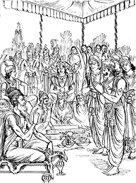
यह सुनकर भीमसेन बोले—परम बुद्धिमान् पितामह! मेरी उत्तम बात सुनिये। राजा युधिष्ठिर, माता कुन्ती, द्रौपदी, अर्जुन, नकुल और सहदेव—ये एकादशीको कभी भोजन नहीं करते तथा मुझसे भी हमेशा यही कहते हैं कि ‘भीमसेन! तुम भी एकादशीको न खाया करो।’ किन्तु मैं इन लोगोंसे यही कह दिया करता हूँ कि ‘मुझसे भूख नहीं सही जायगी।’
भीमसेनकी बात सुनकर व्यासजीने कहा—यदि तुम्हें स्वर्गलोककी प्राप्ति अभीष्ट है और नरकको दूषित समझते हो तो दोनों पक्षोंकी एकादशीको भोजन न करना।
भीमसेन बोले—महाबुद्धिमान् पितामह! मैं आपके सामने सच्ची बात कहता हूँ, एक बार भोजन करके भी मुझसे व्रत नहीं किया जा सकता। फिर उपवास करके तो मैं रह ही कैसे सकता हूँ। मेरे उदरमें वृक नामक अग्नि सदा प्रज्वलित रहती है; अत: जब मैं बहुत अधिक खाता हूँ, तभी यह शान्त होती है। इसलिये महामुने! मैं वर्षभरमें केवल एक ही उपवास कर सकता हूँ; जिससे स्वर्गकी प्राप्ति सुलभ हो तथा जिसके करनेसे मैं कल्याणका भागी हो सकूँ, ऐसा कोई एक व्रत निश्चय करके बताइये। मैं उसका यथोचितरूपसे पालन करूँगा।
व्यासजीने कहा—भीम! ज्येष्ठमासमें सूर्य वृषराशिपर हों या मिथुनराशिपर; शुक्लपक्षमें जो एकादशी हो, उसका यत्नपूर्वक निर्जल व्रत करो। केवल कुल्ला या आचमन करनेके लिये मुखमें जल डाल सकते हो, उसको छोड़कर और किसी प्रकारका जल विद्वान् पुरुष मुखमें न डाले, अन्यथा व्रत भंग हो जाता है। एकादशीको सूर्योदयसे लेकर दूसरे दिनके सूर्योदयतक मनुष्य जलका त्याग करे तो यह व्रत पूर्ण होता है। तदनन्तर द्वादशीको निर्मल प्रभातकालमें स्नान करके ब्राह्मणोंको विधिपूर्वक जल और सुवर्णका दान करे। इस प्रकार सब कार्य पूरा करके जितेन्द्रिय पुरुष ब्राह्मणोंके साथ भोजन करे। वर्षभरमें जितनी एकादशियाँ होती हैं, उन सबका फल निर्जला एकादशीके सेवनसे मनुष्य प्राप्त कर लेता है; इसमें तनिक भी सन्देह नहीं है। शंख, चक्र और गदा धारण करनेवाले भगवान् केशवने मुझसे कहा था कि ‘यदि मानव सबको छोड़कर एकमात्र मेरी शरणमें आ जाय और एकादशीको निराहार रहे तो वह सब पापोंसे छूट जाता है।’
एकादशीव्रत करनेवाले पुरुषके पास विशालकाय, विकराल आकृति और काले रंगवाले दण्ड-पाशधारी भयंकर यमदूत नहीं जाते। अन्तकालमें पीताम्बरधारी, सौम्य स्वभाववाले, हाथमें सुदर्शन धारण करनेवाले और मनके समान वेगशाली विष्णुदूत आकर इस वैष्णव पुरुषको भगवान् विष्णुके धाममें ले जाते हैं। अत: निर्जला एकादशीको पूर्ण यत्न करके उपवास करना चाहिये। तुम भी सब पापोंकी शान्तिके लिये यत्नके साथ उपवास और श्रीहरिका पूजन करो। स्त्री हो या पुरुष, यदि उसने मेरु पर्वतके बराबर भी महान् पाप किया हो तो वह सब एकादशीके प्रभावसे भस्म हो जाता है। जो मनुष्य उस दिन जलके नियमका पालन करता है, वह पुण्यका भागी होता है, उसे एक-एक पहरमें कोटि-कोटि स्वर्णमुद्रा दान करनेका फल प्राप्त होता सुना गया है। मनुष्य निर्जला एकादशीके दिन स्नान, दान, जप, होम आदि जो कुछ भी करता है, वह सब अक्षय होता है, यह भगवान् श्रीकृष्णका कथन है। निर्जला एकादशीको विधिपूर्वक उत्तम रीतिसे उपवास करके मानव वैष्णवपदको प्राप्त कर लेता है। जो मनुष्य एकादशीके दिन अन्न खाता है, वह पाप भोजन करता है। इस लोकमें वह चाण्डालके समान है और मरनेपर दुर्गतिको प्राप्त होता है।*
* एकादश्यां दिने योऽन्नं भुङ्क्ते पापं भुनक्ति स:।
इह लोके च चाण्डालो मृत: प्राप्नोति दुर्गतिम्॥
(५३।४३-४४)
जो ज्येष्ठके शुक्लपक्षमें एकादशीको उपवास करके दान देंगे, वे परमपदको प्राप्त होंगे। जिन्होंने एकादशीको उपवास किया है, वे ब्रह्महत्यारे, शराबी, चोर तथा गुरुद्रोही होनेपर भी सब पातकोंसे मुक्त हो जाते हैं। कुन्तीनन्दन! निर्जला एकादशीके दिन श्रद्धालु स्त्री-पुरुषोंके लिये जो विशेष दान और कर्तव्य विहित है, उसे सुनो—उस दिन जलमें शयन करनेवाले भगवान् विष्णुका पूजन और जलमयी धेनुका दान करना चाहिये। अथवा प्रत्यक्ष धेनु या घृतमयी धेनुका दान उचित है। पर्याप्त दक्षिणा और भाँति-भाँतिके मिष्ठान्नोंद्वारा यत्नपूर्वक ब्राह्मणोंको सन्तुष्ट करना चाहिये। ऐसा करनेसे ब्राह्मण अवश्य सन्तुष्ट होते हैं और उनके सन्तुष्ट होनेपर श्रीहरि मोक्ष प्रदान करते हैं। जिन्होंने शम, दम और दानमें प्रवृत्त हो श्रीहरिकी पूजा और रात्रिमें जागरण करते हुए इस निर्जला एकादशीका व्रत किया है, उन्होंने अपने साथ ही बीती हुई सौ पीढ़ियोंको और आनेवाली सौ पीढ़ियोंको भगवान् वासुदेवके परम धाममें पहुँचा दिया है। निर्जला एकादशीके दिन अन्न, वस्त्र, गौ, जल, शय्या, सुन्दर आसन, कमण्डलु तथा छाता दान करने चाहिये।*
* अन्नं वस्त्रं तथा गावो जलं शय्यासनं शुभम्।
कमण्डलुस्तथा छत्रं दातव्यं निर्जलादिने॥
(५३।५३)
जो श्रेष्ठ एवं सुपात्र ब्राह्मणको जूता दान करता है, वह सोनेके विमानपर बैठकर स्वर्गलोकमें प्रतिष्ठित होता है। जो इस एकादशीकी महिमाको भक्तिपूर्वक सुनता तथा जो भक्तिपूर्वक उसका वर्णन करता है, वे दोनों स्वर्गलोकमें जाते हैं। चतुर्दशीयुक्त अमावास्याको सूर्यग्रहणके समय श्राद्ध करके मनुष्य जिस फलको प्राप्त करता है, वही इसके श्रवणसे भी प्राप्त होता है। पहले दन्तधावन करके यह नियम लेना चाहिये कि ‘मैं भगवान् केशवकी प्रसन्नताके लिये एकादशीको निराहार रहकर आचमनके सिवा दूसरे जलका भी त्याग करूँगा।’ द्वादशीको देवदेवेश्वर भगवान् विष्णुका पूजन करना चाहिये। गन्ध, धूप, पुष्प और सुन्दर वस्त्रसे विधिपूर्वक पूजन करके जलका घड़ा संकल्प करते हुए निम्नांकित मन्त्रका उच्चारण करे।
देवदेव हृषीकेश संसारार्णवतारक।
उदकुम्भप्रदानेन नय मां परमां गतिम्॥
(५३।६०)
‘संसारसागरसे तारनेवाले देवदेव हृषीकेश! इस जलके घड़ेका दान करनेसे आप मुझे परम गतिकी प्राप्ति कराइये।’
भीमसेन! ज्येष्ठमासमें शुक्लपक्षकी जो शुभ एकादशी होती है, उसका निर्जल व्रत करना चाहिये तथा उस दिन श्रेष्ठ ब्राह्मणोंको शक्करके साथ जलके घड़े दान करने चाहिये। ऐसा करनेसे मनुष्य भगवान् विष्णुके समीप पहुँचकर आनन्दका अनुभव करता है। तत्पश्चात् द्वादशीको ब्राह्मणभोजन करानेके बाद स्वयं भोजन करे। जो इस प्रकार पूर्णरूपसे पापनाशिनी एकादशीका व्रत करता है, वह सब पापोंसे मुक्त हो अनामय पदको प्राप्त होता है।
यह सुनकर भीमसेनने भी इस शुभ एकादशीका व्रत आरम्भ कर दिया। तबसे यह लोकमें ‘पाण्डव-द्वादशी’ के नामसे विख्यात हुई।
आषाढ़मास कृष्णपक्षकी ‘योगिनी’ एकादशीका माहात्म्य
युधिष्ठिरने पूछा—वासुदेव! आषाढ़के कृष्णपक्षमें जो एकादशी होती है, उसका क्या नाम है? कृपया उसका वर्णन कीजिये।
भगवान् श्रीकृष्ण बोले—नृपश्रेष्ठ! आषाढ़के कृष्णपक्षकी एकादशीका नाम ‘योगिनी’ है। यह बड़े-बड़े पातकोंका नाश करनेवाली है। संसारसागरमें डूबे हुए प्राणियोंके लिये यह सनातन नौकाके समान है। तीनों लोकोंमें यह सारभूत व्रत है।
अलकापुरीमें राजाधिराज कुबेर रहते हैं। वे सदा भगवान् शिवकी भक्तिमें तत्पर रहनेवाले हैं। उनके हेममाली नामवाला एक यक्ष सेवक था, जो पूजाके लिये फूल लाया करता था। हेममालीकी पत्नी बड़ी सुन्दरी थी। उसका नाम विशालाक्षी था। वह यक्ष कामपाशमें आबद्ध होकर सदा अपनी पत्नीमें आसक्त रहता था। एक दिनकी बात है, हेममाली मानसरोवरसे फूल लाकर अपने घरमें ही ठहर गया और पत्नीके प्रेमका रसास्वादन करने लगा; अत: कुबेरके भवनमें न जा सका। इधर कुबेर मन्दिरमें बैठकर शिवका पूजन कर रहे थे। उन्होंने दोपहरतक फूल आनेकी प्रतीक्षा की। जब पूजाका समय व्यतीत हो गया तो यक्षराजने कुपित होकर सेवकोंसे पूछा—‘यक्षो! दुरात्मा हेममाली क्यों नहीं आ रहा है, इस बातका पता तो लगाओ।’
यक्षोंने कहा—राजन्! वह तो पत्नीकी कामनामें आसक्त हो अपनी इच्छाके अनुसार घरमें ही रमण कर रहा है।
उनकी बात सुनकर कुबेर क्रोधमें भर गये और तुरंत ही हेममालीको बुलवाया। देर हुई जानकर हेममालीके नेत्र भयसे व्याकुल हो रहे थे। वह आकर कुबेरके सामने खड़ा हुआ। उसे देखकर कुबेरकी आँखें क्रोधसे लाल हो गयीं। वे बोले—‘ओ पापी! ओ दुष्ट! ओ दुराचारी! तूने भगवान्की अवहेलना की है, अत: कोढ़से युक्त और अपनी उस प्रियतमासे वियुक्त होकर इस स्थानसे भ्रष्ट होकर अन्यत्र चला जा।’ कुबेरके ऐसा कहनेपर वह उस स्थानसे नीचे गिर गया। उस समय उसके हृदयमें महान् दु:ख हो रहा था। कोढ़ोंसे सारा शरीर पीड़ित था। परन्तु शिव-पूजाके प्रभावसे उसकी स्मरण-शक्ति लुप्त नहीं होती थी। पातकसे दबा होनेपर भी वह अपने पूर्वकर्मको याद रखता था। तदनन्तर इधर-उधर घूमता हुआ वह पर्वतोंमें श्रेष्ठ मेरुगिरिके शिखरपर गया। वहाँ उसे तपस्याके पुंज मुनिवर मार्कण्डेयजीका दर्शन हुआ। पापकर्मा यक्षने दूरसे ही मुनिके चरणोंमें प्रणाम किया।
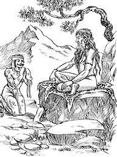
मुनिवर मार्कण्डेयने उसे भयसे काँपते देख परोपकारकी इच्छासे निकट बुलाकर कहा—‘तुझे कोढ़के रोगने कैसे दबा लिया? तू क्यों इतना अधिक निन्दनीय जान पड़ता है?’
यक्ष बोला—मुने! मैं कुबेरका अनुचर हूँ। मेरा नाम हेममाली है। मैं प्रतिदिन मानसरोवरसे फूल ले आकर शिव-पूजाके समय कुबेरको दिया करता था। एक दिन पत्नी-सहवासके सुखमें फँस जानेके कारण मुझे समयका ज्ञान ही नहीं रहा; अत: राजाधिराज कुबेरने कुपित होकर मुझे शाप दे दिया, जिससे मैं कोढ़से आक्रान्त होकर अपनी प्रियतमासे बिछुड़ गया। मुनिश्रेष्ठ! इस समय किसी शुभ कर्मके प्रभावसे मैं आपके निकट आ पहुँचा हूँ। संतोंका चित्त स्वभावत: परोपकारमें लगा रहता है, यह जानकर मुझ अपराधीको कर्तव्यका उपदेश दीजिये।
मार्कण्डेयजीने कहा—तुमने यहाँ सच्ची बात कही है, असत्य-भाषण नहीं किया है; इसलिये मैं तुम्हें कल्याणप्रद व्रतका उपदेश करता हूँ। तुम आषाढ़के कृष्णपक्षमें ‘योगिनी’ एकादशीका व्रत करो। इस व्रतके पुण्यसे तुम्हारी कोढ़ निश्चय ही दूर हो जायगी।
भगवान् श्रीकृष्ण कहते हैं—ऋषिके ये वचन सुनकर हेममाली दण्डकी भाँति मुनिके चरणोंमें पड़ गया। मुनिने उसे उठाया, इससे उसको बड़ा हर्ष हुआ। मार्कण्डेयजीके उपदेशसे उसने योगिनी एकादशीका व्रत किया, जिससे उसके शरीरकी कोढ़ दूर हो गयी। मुनिके कथनानुसार उस उत्तम व्रतका अनुष्ठान करनेपर वह पूर्ण सुखी हो गया। नृपश्रेष्ठ! यह योगिनीका व्रत ऐसा ही बताया गया है। जो अट्ठासी हजार ब्राह्मणोंको भोजन कराता है, उसके समान ही फल उस मनुष्यको भी मिलता है, जो योगिनी एकादशीका व्रत करता है। ‘योगिनी’ महान् पापोंको शान्त करनेवाली और महान् पुण्य-फल देनेवाली है। इसके पढ़ने और सुननेसे मनुष्य सब पापोंसे मुक्त हो जाता है।
आषाढ़मास शुक्लपक्षकी ‘शयनी’ एकादशीका माहात्म्य
युधिष्ठिरने पूछा—भगवन्! आषाढ़के शुक्लपक्षमें कौन-सी एकादशी होती है? उसका नाम और विधि क्या है? यह बतलानेकी कृपा करें।
भगवान् श्रीकृष्ण बोले—राजन्! आषाढ़ शुक्लपक्षकी एकादशीका नाम ‘शयनी’ है। मैं उसका वर्णन करता हूँ। वह महान् पुण्यमयी, स्वर्ग एवं मोक्ष प्रदान करनेवाली, सब पापोंको हरनेवाली तथा उत्तम व्रत है। आषाढ़ शुक्लपक्षमें शयनी एकादशीके दिन जिन्होंने कमल-पुष्पसे कमललोचन भगवान् विष्णुका पूजन तथा एकादशीका उत्तम व्रत किया है, उन्होंने तीनों लोकों और तीनों सनातन देवताओंका पूजन कर लिया। हरिशयनी एकादशीके दिन मेरा एक स्वरूप राजा बलिके यहाँ रहता है और दूसरा क्षीरसागरमें शेषनागकी शय्यापर तबतक शयन करता है, जबतक आगामी कार्तिककी एकादशी नहीं आ जाती; अत: आषाढ़शुक्ला एकादशीसे लेकर कार्तिकशुक्ला एकादशीतक मनुष्यको भलीभाँति धर्मका आचरण करना चाहिये। जो मनुष्य इस व्रतका अनुष्ठान करता है, वह परम गतिको प्राप्त होता है, इस कारण यत्नपूर्वक इस एकादशीका व्रत करना चाहिये। एकादशीकी रातमें जागरण करके शंख, चक्र और गदा धारण करनेवाले भगवान् विष्णुकी भक्तिपूर्वक पूजा करनी चाहिये। ऐसा करनेवाले पुरुषके पुण्यकी गणना करनेमें चतुर्मुख ब्रह्माजी भी असमर्थ हैं। राजन्! जो इस प्रकार भोग और मोक्ष प्रदान करनेवाले सर्वपापहारी एकादशीके उत्तम व्रतका पालन करता है, वह जातिका चाण्डाल होनेपर भी संसारमें सदा मेरा प्रिय करनेवाला है। जो मनुष्य दीपदान, पलाशके पत्तेपर भोजन और व्रत करते हुए चौमासा व्यतीत करते हैं, वे मेरे प्रिय हैं। चौमासेमें भगवान् विष्णु सोये रहते हैं; इसलिये मनुष्यको भूमिपर शयन करना चाहिये। सावनमें साग, भादोंमें दही, क्वारमें दूध और कार्तिकमें दालका त्याग कर देना चाहिये।* अथवा जो चौमासेमें ब्रह्मचर्यका पालन करता है, वह परम गतिको प्राप्त होता है।
* श्रावणे वर्जयेच्छाकं दधि भाद्रपदे तथा॥
दुग्धमाश्वयुजि त्याज्यं कार्तिके द्विदलं त्यजेत्।
(५५।३३-३४)
राजन्! एकादशीके व्रतसे ही मनुष्य सब पापोंसे मुक्त हो जाता है; अत: सदा इसका व्रत करना चाहिये। कभी भूलना नहीं चाहिये। ‘शयनी’ और ‘बोधिनी’ के बीचमें जो कृष्णपक्षकी एकादशियाँ होती हैं, गृहस्थके लिये वे ही व्रत रखनेयोग्य हैं—अन्य मासोंकी कृष्णपक्षीय एकादशी गृहस्थके रखनेयोग्य नहीं होती। शुक्लपक्षकी एकादशी सभी करनी चाहिये।
श्रावणमास कृष्णपक्षकी ‘कामिका’ एकादशीका माहात्म्य
युधिष्ठिरने पूछा—गोविन्द! वासुदेव! आपको नमस्कार है! श्रावणके कृष्णपक्षमें कौन-सी एकादशी होती है? उसका वर्णन कीजिये।
भगवान् श्रीकृष्ण बोले—राजन्! सुनो, मैं तुम्हें एक पापनाशक उपाख्यान सुनाता हूँ, जिसे पूर्वकालमें ब्रह्माजीने नारदजीके पूछनेपर कहा था।
नारदजीने प्रश्न किया—भगवन्! कमलासन! मैं आपसे यह सुनना चाहता हूँ कि श्रावणके कृष्णपक्षमें जो एकादशी होती है, उसका क्या नाम है, उसके कौन-से देवता हैं तथा उससे कौन-सा पुण्य होता है? प्रभो! यह सब बताइये।
ब्रह्माजीने कहा—नारद! सुनो—मैं सम्पूर्ण लोकोंके हितकी इच्छासे तुम्हारे प्रश्नका उत्तर दे रहा हूँ। श्रावणमासमें जो कृष्णपक्षकी एकादशी होती है, उसका नाम ‘कामिका’ है; उसके स्मरणमात्रसे वाजपेय-यज्ञका फल मिलता है। उस दिन श्रीधर, हरि, विष्णु, माधव और मधुसूदन आदि नामोंसे भगवान्का पूजन करना चाहिये। भगवान् श्रीकृष्णके पूजनसे जो फल मिलता है, वह गंगा, काशी, नैमिषारण्य तथा पुष्करक्षेत्रमें भी सुलभ नहीं है। सिंहराशिके बृहस्पति होनेपर तथा व्यतीपात और दण्डयोगमें गोदावरीस्नानसे जिस फलकी प्राप्ति होती है, वही फल भगवान् श्रीकृष्णके पूजनसे भी मिलता है। जो समुद्र और वनसहित समूची पृथ्वीका दान करता है तथा जो कामिका एकादशीका व्रत करता है, वे दोनों समान फलके भागी माने गये हैं। जो ब्यायी हुई गायको अन्यान्य सामग्रियोंसहित दान करता है, उस मनुष्यको जिस फलकी प्राप्ति होती है, वही ‘कामिका’ का व्रत करनेवालेको मिलता है। जो नरश्रेष्ठ श्रावणमासमें भगवान् श्रीधरका पूजन करता है, उसके द्वारा गन्धर्वों और नागोंसहित सम्पूर्ण देवताओंकी पूजा हो जाती है; अत: पापभीरु मनुष्योंको यथाशक्ति पूरा प्रयत्न करके ‘कामिका’ के दिन श्रीहरिका पूजन करना चाहिये। जो पापरूपी पंकसे भरे हुए संसारसमुद्रमें डूब रहे हैं, उनका उद्धार करनेके लिये कामिकाका व्रत सबसे उत्तम है। अध्यात्मविद्यापरायण पुरुषोंको जिस फलकी प्राप्ति होती है; उससे बहुत अधिक फल ‘कामिका’ व्रतका सेवन करनेवालोंको मिलता है। ‘कामिका’ का व्रत करनेवाला मनुष्य रात्रिमें जागरण करके न तो कभी भयंकर यमराजका दर्शन करता है और न कभी दुर्गतिमें ही पड़ता है।
लाल मणि, मोती, वैदूर्य और मूँगे आदिसे पूजित होकर भी भगवान् विष्णु वैसे सन्तुष्ट नहीं होते, जैसे तुलसीदलसे पूजित होनेपर होते हैं। जिसने तुलसीकी मंजरियोंसे श्रीकेशवका पूजन कर लिया है; उसके जन्मभरका पाप निश्चय ही नष्ट हो जाता है। जो दर्शन करनेपर सारे पापसमुदायका नाश कर देती है, स्पर्श करनेपर शरीरको पवित्र बनाती है, प्रणाम करनेपर रोगोंका निवारण करती है, जलसे सींचनेपर यमराजको भी भय पहुँचाती है, आरोपित करनेपर भगवान् श्रीकृष्णके समीप ले जाती है और भगवान्के चरणोंमें चढ़ानेपर मोक्षरूपी फल प्रदान करती है, उस तुलसी देवीको नमस्कार है।*
* या दृष्टा निखिलाघसंघशमनी
स्पृष्टा वपुष्पावनी
रोगाणामभिवन्दिता निरसनी
सिक्तान्तकत्रासिनी।
प्रत्यासत्तिविधायिनी भगवत:
कृष्णस्य संरोपिता
न्यस्ता तच्चरणे विमुक्तिफलदा
तस्यै तुलस्यै नम:॥
(५६।२२)
जो मनुष्य एकादशीको दिन-रात दीपदान करता है, उसके पुण्यकी संख्या चित्रगुप्त भी नहीं जानते। एकादशीके दिन भगवान् श्रीकृष्णके सम्मुख जिसका दीपक जलता है, उसके पितर स्वर्गलोकमें स्थित होकर अमृतपानसे तृप्त होते हैं। घी अथवा तिलके तेलसे भगवान्के सामने दीपक जलाकर मनुष्य देह-त्यागके पश्चात् करोड़ों दीपकोंसे पूजित हो स्वर्गलोकमें जाता है।
भगवान् श्रीकृष्ण कहते हैं—युधिष्ठिर! यह तुम्हारे सामने मैंने कामिका एकादशीकी महिमाका वर्णन किया है। ‘कामिका’ सब पातकोंको हरनेवाली है; अत: मानवोंको इसका व्रत अवश्य करना चाहिये। यह स्वर्गलोक तथा महान् पुण्यफल प्रदान करनेवाली है। जो मनुष्य श्रद्धाके साथ इसका माहात्म्य श्रवण करता है, वह सब पापोंसे मुक्त हो श्रीविष्णुलोकमें जाता है।
श्रावणमास शुक्लपक्षकी ‘पुत्रदा’ एकादशीका माहात्म्य
युधिष्ठिरने पूछा—मधुसूदन! श्रावणके शुक्लपक्षमें किस नामकी एकादशी होती है? कृपया मेरे सामने उसका वर्णन कीजिये।
भगवान् श्रीकृष्ण बोले—राजन्! प्राचीन कालकी बात है, द्वापर युगके प्रारम्भका समय था, माहिष्मतीपुरमें राजा महीजित् अपने राज्यका पालन करते थे, किन्तु उन्हें कोई पुत्र नहीं था; इसलिये वह राज्य उन्हें सुखदायक नहीं प्रतीत होता था। अपनी अवस्था अधिक देख राजाको बड़ी चिन्ता हुई। उन्होंने प्रजावर्गमें बैठकर इस प्रकार कहा—‘प्रजाजनो! इस जन्ममें मुझसे कोई पातक नहीं हुआ। मैंने अपने खजानेमें अन्यायसे कमाया हुआ धन नहीं जमा किया है। ब्राह्मणों और देवताओंका धन भी मैंने कभी नहीं लिया है। प्रजाका पुत्रवत् पालन किया, धर्मसे पृथ्वीपर अधिकार जमाया तथा दुष्टोंको, वे बन्धु और पुत्रोंके समान ही क्यों न रहे हों, दण्ड दिया है। शिष्ट पुरुषोंका सदा सम्मान किया और किसीको द्वेषका पात्र नहीं समझा। फिर क्या कारण है, जो मेरे घरमें आजतक पुत्र उत्पन्न नहीं हुआ। आपलोग इसका विचार करें।’
राजाके ये वचन सुनकर प्रजा और पुरोहितोंके साथ ब्राह्मणोंने उनके हितका विचार करके गहन वनमें प्रवेश किया। राजाका कल्याण चाहनेवाले वे सभी लोग इधर-उधर घूमकर ऋषिसेवित आश्रमोंकी तलाश करने लगे। इतनेहीमें उन्हें मुनिश्रेष्ठ लोमशका दर्शन हुआ। लोमशजी धर्मके तत्त्वज्ञ, सम्पूर्ण शास्त्रोंके विशिष्ट विद्वान्, दीर्घायु और महात्मा हैं। उनका शरीर लोमसे भरा हुआ है। वे ब्रह्माजीके समान तेजस्वी हैं। एक-एक कल्प बीतनेपर उनके शरीरका एक-एक लोम विशीर्ण होता—टूटकर गिरता है; इसीलिये उनका नाम लोमश हुआ है। वे महामुनि तीनों कालोंकी बातें जानते हैं। उन्हें देखकर सब लोगोंको बड़ा हर्ष हुआ। उन्हें निकट आया देख लोमशजीने पूछा—‘तुम सब लोग किसलिये यहाँ आये हो? अपने आगमनका कारण बताओ। तुमलोगोंके लिये जो हितकर कार्य होगा, उसे मैं अवश्य करूँगा।’
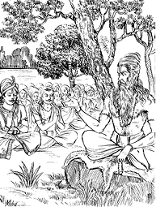
प्रजाओंने कहा—ब्रह्मन्! इस समय महीजित् नामवाले जो राजा हैं, उन्हें कोई पुत्र नहीं है। हमलोग उन्हींकी प्रजा हैं, जिनका उन्होंने पुत्रकी भाँति पालन किया है। उन्हें पुत्रहीन देख, उनके दु:खसे दु:खित हो हम तपस्या करनेका दृढ़ निश्चय करके यहाँ आये हैं। द्विजोत्तम! राजाके भाग्यसे इस समय हमें आपका दर्शन मिल गया है। महापुरुषोंके दर्शनसे ही मनुष्योंके सब कार्य सिद्ध हो जाते हैं। मुने! अब हमें उस उपायका उपदेश कीजिये, जिससे राजाको पुत्रकी प्राप्ति हो।
उनकी बात सुनकर महर्षि लोमश दो घड़ीतक ध्यानमग्न हो गये। तत्पश्चात् राजाके प्राचीन जन्मका वृत्तान्त जानकर उन्होंने कहा—‘प्रजावृन्द! सुनो—राजा महीजित् पूर्वजन्ममें मनुष्योंको चूसनेवाला धनहीन वैश्य था। वह वैश्य गाँव-गाँव घूमकर व्यापार किया करता था। एक दिन जेठके शुक्लपक्षमें दशमी तिथिको, जब दोपहरका सूर्य तप रहा था, वह गाँवकी सीमामें एक जलाशयपर पहुँचा। पानीसे भरी हुई बावली देखकर वैश्यने वहाँ जल पीनेका विचार किया। इतनेहीमें वहाँ बछड़ेके साथ एक गौ भी आ पहुँची। वह प्याससे व्याकुल और तापसे पीड़ित थी; अत: बावलीमें जाकर जल पीने लगी। वैश्यने पानी पीती हुई गायको हाँककर दूर हटा दिया और स्वयं पानी पीया। उसी पाप-कर्मके कारण राजा इस समय पुत्रहीन हुए हैं। किसी जन्मके पुण्यसे इन्हें अकण्टक राज्यकी प्राप्ति हुई है।’
प्रजाओंने कहा—मुने! पुराणमें सुना जाता है कि प्रायश्चित्तरूप पुण्यसे पाप नष्ट होता है; अत: पुण्यका उपदेश कीजिये, जिससे उस पापका नाश हो जाय।
लोमशजी बोले—प्रजाजनो! श्रावणमासके शुक्लपक्षमें जो एकादशी होती है, वह ‘पुत्रदा’ के नामसे विख्यात है। वह मनोवांछित फल प्रदान करनेवाली है। तुमलोग उसीका व्रत करो। यह सुनकर प्रजाओंने मुनिको नमस्कार किया और नगरमें आकर विधिपूर्वक पुत्रदा एकादशीके व्रतका अनुष्ठान किया। उन्होंने विधिपूर्वक जागरण भी किया और उसका निर्मल पुण्य राजाको दे दिया। तत्पश्चात् रानीने गर्भ धारण किया और प्रसवका समय आनेपर बलवान् पुत्रको जन्म दिया।
इसका माहात्म्य सुनकर मनुष्य पापसे मुक्त हो जाता है तथा इहलोकमें सुख पाकर परलोकमें स्वर्गीय गतिको प्राप्त होता है।
भाद्रपदमास कृष्णपक्षकी ‘अजा’ एकादशीका माहात्म्य
युधिष्ठिरने पूछा—जनार्दन! अब मैं यह सुनना चाहता हूँ कि भाद्रपदमासके कृष्णपक्षमें कौन-सी एकादशी होती है? कृपया बताइये।
भगवान् श्रीकृष्ण बोले—राजन्! एकचित्त होकर सुनो। भाद्रपद-मासके कृष्णपक्षकी एकादशीका नाम ‘अजा’ है, वह सब पापोंका नाश करनेवाली बतायी गयी है। जो भगवान् हृषीकेशका पूजन करके इसका व्रत करता है, उसके सारे पाप नष्ट हो जाते हैं। पूर्वकालमें हरिश्चन्द्र नामक एक विख्यात चक्रवर्ती राजा हो गये हैं, जो समस्त भूमण्डलके स्वामी और सत्यप्रतिज्ञ थे। एक समय किसी कर्मका फलभोग प्राप्त होनेपर उन्हें राज्यसे भ्रष्ट होना पड़ा। राजाने अपनी पत्नी और पुत्रको बेचा। फिर अपनेको भी बेच दिया। पुण्यात्मा होते हुए भी उन्हें चाण्डालकी दासता करनी पड़ी। वे मुर्दोंका कफन लिया करते थे। इतनेपर भी नृपश्रेष्ठ हरिश्चन्द्र सत्यसे विचलित नहीं हुए। इस प्रकार चाण्डालकी दासता करते उनके अनेक वर्ष व्यतीत हो गये। इससे राजाको बड़ी चिन्ता हुई। वे अत्यन्त दु:खी होकर सोचने लगे—‘क्या करूँ? कहाँ जाऊँ? कैसे मेरा उद्धार होगा?’ इस प्रकार चिन्ता करते-करते वे शोकके समुद्रमें डूब गये। राजाको आतुर जानकर कोई मुनि उनके पास आये, वे महर्षि गौतम थे। श्रेष्ठ ब्राह्मणको आया देख नृपश्रेष्ठने उनके चरणोंमें प्रणाम किया और दोनों हाथ जोड़ गौतमके सामने खड़े होकर अपना सारा दु:खमय समाचार कह सुनाया। राजाकी बात सुनकर गौतमने कहा—‘राजन्! भादोंके कृष्णपक्षमें अत्यन्त कल्याणमयी ‘अजा’ नामकी एकादशी आ रही है, जो पुण्य प्रदान करनेवाली है। इसका व्रत करो। इससे पापका अन्त होगा। तुम्हारे भाग्यसे आजके सातवें दिन एकादशी है। उस दिन उपवास करके रातमें जागरण करना।’
ऐसा कहकर महर्षि गौतम अन्तर्धान हो गये। मुनिकी बात सुनकर राजा हरिश्चन्द्रने उस उत्तम व्रतका अनुष्ठान किया। उस व्रतके प्रभावसे राजा सारे दु:खोंसे पार हो गये। उन्हें पत्नीका सन्निधान और पुत्रका जीवन मिल गया। आकाशमें दुन्दुभियाँ बज उठीं। देवलोकसे फूलोंकी वर्षा होने लगी। एकादशीके प्रभावसे राजाने अकण्टक राज्य प्राप्त किया और अन्तमें वे पुरजन तथा परिजनोंके साथ स्वर्गलोकको प्राप्त हो गये। राजा युधिष्ठिर! जो मनुष्य ऐसा व्रत करते हैं, वे सब पापोंसे मुक्त हो स्वर्गलोकमें जाते हैं। इसके पढ़ने और सुननेसे अश्वमेध-यज्ञका फल मिलता है।
भाद्रपदमास शुक्लपक्षकी ‘पद्मा’ एकादशीका माहात्म्य
युधिष्ठिरने पूछा—केशव! भाद्रपदमासके शुक्लपक्षमें जो एकादशी होती है, उसका क्या नाम, कौन देवता और कैसी विधि है? यह बताइये।
भगवान् श्रीकृष्ण बोले—राजन्! इस विषयमें मैं तुम्हें आश्चर्यजनक कथा सुनाता हूँ; जिसे ब्रह्माजीने महात्मा नारदसे कहा था।
नारदजीने पूछा—चतुर्मुख! आपको नमस्कार है। मैं भगवान् विष्णुकी आराधनाके लिये आपके मुखसे यह सुनना चाहता हूँ कि भाद्रपदमासके शुक्लपक्षमें कौन-सी एकादशी होती है?
ब्रह्माजीने कहा—मुनिश्रेष्ठ! तुमने बहुत उत्तम बात पूछी है। क्यों न हो, वैष्णव जो ठहरे। भादोंके शुक्लपक्षकी एकादशी ‘पद्मा’ के नामसे विख्यात है। उस दिन भगवान् हृषीकेशकी पूजा होती है। यह उत्तम व्रत अवश्य करनेयोग्य है।
सूर्यवंशमें मान्धाता नामक एक चक्रवर्ती, सत्यप्रतिज्ञ और प्रतापी राजर्षि हो गये हैं। वे प्रजाका अपने औरस पुत्रोंकी भाँति धर्मपूर्वक पालन किया करते थे। उनके राज्यमें अकाल नहीं पड़ता था, मानसिक चिन्ताएँ नहीं सताती थीं और व्याधियोंका प्रकोप भी नहीं होता था। उनकी प्रजा निर्भय तथा धन-धान्यसे समृद्ध थी। महाराजके कोषमें केवल न्यायोपार्जित धनका ही संग्रह था। उनके राज्यमें समस्त वर्णों और आश्रमोंके लोग अपने-अपने धर्ममें लगे रहते थे। मान्धाताके राज्यकी भूमि कामधेनुके समान फल देनेवाली थी। उनके राज्य करते समय प्रजाको बहुत सुख प्राप्त होता था। एक समय किसी कर्मका फलभोग प्राप्त होनेपर राजाके राज्यमें तीन वर्षोंतक वर्षा नहीं हुई। इससे उनकी प्रजा भूखसे पीड़ित हो नष्ट होने लगी; तब सम्पूर्ण प्रजाने महाराजके पास आकर इस प्रकार कहा—
प्रजा बोली—नृपश्रेष्ठ! आपको प्रजाकी बात सुननी चाहिये। पुराणोंमें मनीषी पुरुषोंने जलको ‘नारा’ कहा है; वह नारा ही भगवान्का अयन—निवासस्थान है; इसलिये वे नारायण कहलाते हैं। नारायणस्वरूप भगवान् विष्णु सर्वत्र व्यापकरूपमें विराजमान हैं। वे ही मेघस्वरूप होकर वर्षा करते हैं, वर्षासे अन्न पैदा होता है और अन्नसे प्रजा जीवन धारण करती है। नृपश्रेष्ठ! इस समय अन्नके बिना प्रजाका नाश हो रहा है; अत: ऐसा कोई उपाय कीजिये, जिससे हमारे योगक्षेमका निर्वाह हो।
राजाने कहा—आपलोगोंका कथन सत्य है, क्योंकि अन्नको ब्रह्म कहा गया है। अन्नसे प्राणी उत्पन्न होते हैं और अन्नसे ही जगत् जीवन धारण करता है। लोकमें बहुधा ऐसा सुना जाता है तथा पुराणमें भी बहुत विस्तारके साथ ऐसा वर्णन है कि राजाओंके अत्याचारसे प्रजाको पीड़ा होती है; किन्तु जब मैं बुद्धिसे विचार करता हूँ तो मुझे अपना किया हुआ कोई अपराध नहीं दिखायी देता। फिर भी मैं प्रजाका हित करनेके लिये पूर्ण प्रयत्न करूँगा।
ऐसा निश्चय करके राजा मान्धाता इने-गिने व्यक्तियोंको साथ ले विधाताको प्रणाम करके सघन वनकी ओर चल दिये। वहाँ जाकर मुख्य-मुख्य मुनियों और तपस्वियोंके आश्रमोंपर घूमते फिरे। एक दिन उन्हें ब्रह्मपुत्र अंगिरा ऋषिका दर्शन हुआ। उनपर दृष्टि पड़ते ही राजा हर्षमें भरकर अपने वाहनसे उतर पड़े और इन्द्रियोंको वशमें रखते हुए दोनों हाथ जोड़कर उन्होंने मुनिके चरणोंमें प्रणाम किया। मुनिने भी ‘स्वस्ति’ कहकर राजाका अभिनन्दन किया और उनके राज्यके सातों अंगोंकी कुशल पूछी। राजाने अपनी कुशल बताकर मुनिके स्वास्थ्यका समाचार पूछा। मुनिने राजाको आसन और अर्घ्य दिया। उन्हें ग्रहण करके जब वे मुनिके समीप बैठे तो उन्होंने इनके आगमनका कारण पूछा।
तब राजाने कहा—भगवन्! मैं धर्मानुकूल प्रणालीसे पृथ्वीका पालन कर रहा था। फिर भी मेरे राज्यमें वर्षाका अभाव हो गया। इसका क्या कारण है, इस बातको मैं नहीं जानता।
ऋषि बोले—राजन्! यह सब युगोंमें उत्तम सत्ययुग है। इसमें सब लोग परमात्माके चिन्तनमें लगे रहते हैं तथा इस समय धर्म अपने चारों चरणोंसे युक्त होता है। इस युगमें केवल ब्राह्मण ही तपस्वी होते हैं, दूसरे लोग नहीं। किन्तु महाराज! तुम्हारे राज्यमें यह शूद्र तपस्या करता है; इसी कारण मेघ पानी नहीं बरसाते। तुम इसके प्रतीकारका यत्न करो; जिससे यह अनावृष्टिका दोष शान्त हो जाय।
राजाने कहा—मुनिवर! एक तो यह तपस्यामें लगा है, दूसरे निरपराध है; अत: मैं इसका अनिष्ट नहीं करूँगा। आप उक्त दोषको शान्त करनेवाले किसी धर्मका उपदेश कीजिये।
ऋषि बोले—राजन्! यदि ऐसी बात है तो एकादशीका व्रत करो। भाद्रपदमासके शुक्लपक्षमें जो ‘पद्मा’ नामसे विख्यात एकादशी होती है, उसके व्रतके प्रभावसे निश्चय ही उत्तम वृष्टि होगी। नरेश! तुम अपनी प्रजा और परिजनोंके साथ इसका व्रत करो।
ऋषिका यह वचन सुनकर राजा अपने घर लौट आये। उन्होंने चारों वर्णोंकी समस्त प्रजाओंके साथ भादोंके शुक्लपक्षकी ‘पद्मा’ एकादशीका व्रत किया। इस प्रकार व्रत करनेपर मेघ पानी बरसाने लगे। पृथ्वी जलसे आप्लावित हो गयी और हरी-भरी खेतीसे सुशोभित होने लगी। उस व्रतके प्रभावसे सब लोग सुखी हो गये।
भगवान् श्रीकृष्ण कहते हैं—राजन्! इस कारण इस उत्तम व्रतका अनुष्ठान अवश्य करना चाहिये। ‘पद्मा’ एकादशीके दिन जलसे भरे हुए घड़ेको वस्त्रसे ढँककर दही और चावलके साथ ब्राह्मणको दान देना चाहिये, साथ ही छाता और जूता भी देने चाहिये। दान करते समय निम्नांकित मन्त्रका उच्चारण करे—
नमो नमस्ते गोविन्द बुधश्रवणसंज्ञक॥
अघौघसंक्षयं कृत्वा सर्वसौख्यप्रदो भव।
भुक्तिमुक्तिप्रदश्चैव लोकानां सुखदायक:॥
(५९।३८-३९)
‘[बुधवार और श्रवण नक्षत्रके योगसे युक्त द्वादशीके दिन] बुद्धश्रवण नाम धारण करनेवाले भगवान् गोविन्द! आपको नमस्कार है, नमस्कार है; मेरी पापराशिका नाश करके आप मुझे सब प्रकारके सुख प्रदान करें। आप पुण्यात्माजनोंको भोग और मोक्ष प्रदान करनेवाले तथा सुखदायक हैं।’
राजन्! इसके पढ़ने और सुननेसे मनुष्य सब पापोंसे मुक्त हो जाता है।
आश्विनमास कृष्णपक्षकी ‘इन्दिरा’ एकादशीका माहात्म्य
युधिष्ठिरने पूछा—मधुसूदन! कृपा करके मुझे यह बताइये कि आश्विनके कृष्णपक्षमें कौन-सी एकादशी होती है?
भगवान् श्रीकृष्ण बोले—राजन्! आश्विन कृष्णपक्षमें ‘इन्दिरा’ नामकी एकादशी होती है, उसके व्रतके प्रभावसे बड़े-बड़े पापोंका नाश हो जाता है। नीच योनिमें पड़े हुए पितरोंको भी यह एकादशी सद्गति देनेवाली है।
राजन्! पूर्वकालकी बात है, सत्ययुगमें इन्द्रसेन नामसे विख्यात राजकुमार थे, जो अब माहिष्मतीपुरीके राजा होकर धर्मपूर्वक प्रजाका पालन करते थे। उनका यश सब ओर फैल चुका था। राजा इन्द्रसेन भगवान् विष्णुकी भक्तिमें तत्पर हो गोविन्दके मोक्षदायक नामोंका जप करते हुए समय व्यतीत करते थे और विधिपूर्वक अध्यात्मतत्त्वके चिन्तनमें संलग्न रहते थे। एक दिन राजा राजसभामें सुखपूर्वक बैठे हुए थे, इतनेहीमें देवर्षि नारद आकाशसे उतरकर वहाँ आ पहुँचे। उन्हें आया देख राजा हाथ जोड़कर खड़े हो गये और विधिपूर्वक पूजन करके उन्हें आसनपर बिठाया, इसके बाद वे इस प्रकार बोले—‘मुनिश्रेष्ठ! आपकी कृपासे मेरी सर्वथा कुशल है। आज आपके दर्शनसे मेरी सम्पूर्ण यज्ञ-क्रियाएँ सफल हो गयीं। देवर्षे! अपने आगमनका कारण बताकर मुझपर कृपा करें।’
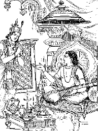
नारदजीने कहा—नृपश्रेष्ठ! सुनो, मेरी बात तुम्हें आश्चर्यमें डालनेवाली है, मैं ब्रह्मलोकसे यमलोकमें आया था, वहाँ एक श्रेष्ठ आसनपर बैठा और यमराजने मेरी भक्तिपूर्वक पूजा की। उस समय यमराजकी सभामें मैंने तुम्हारे पिताको भी देखा था। वे व्रतभंगके दोषसे वहाँ आये थे। राजन्! उन्होंने तुमसे कहनेके लिये एक सन्देश दिया है, उसे सुनो। उन्होंने कहा है, ‘बेटा! मुझे ‘इन्दिरा’ के व्रतका पुण्य देकर स्वर्गमें भेजो।’ उनका यह सन्देश लेकर मैं तुम्हारे पास आया हूँ। राजन्! अपने पिताको स्वर्गलोककी प्राप्ति करानेके लिये ‘इन्दिरा’ का व्रत करो।
राजाने पूछा—भगवन्! कृपा करके ‘इन्दिरा’ का व्रत बताइये। किस पक्षमें, किस तिथिको और किस विधिसे उसका व्रत करना चाहिये।
नारदजीने कहा—राजेन्द्र! सुनो, मैं तुम्हें इस व्रतकी शुभकारक विधि बतलाता हूँ। आश्विनमासके कृष्णपक्षमें दशमीके उत्तम दिनको श्रद्धायुक्त चित्तसे प्रात:काल स्नान करे। फिर मध्याह्नकालमें स्नान करके एकाग्रचित्त हो एक समय भोजन करे तथा रात्रिमें भूमिपर सोये। रात्रिके अन्तमें निर्मल प्रभात होनेपर एकादशीके दिन दातुन करके मुँह धोये; इसके बाद भक्तिभावसे निम्नांकित मन्त्र पढ़ते हुए उपवासका नियम ग्रहण करे—
अद्य स्थित्वा निराहार: सर्वभोगविवर्जित:।
श्वो भोक्ष्ये पुण्डरीकाक्ष शरणं मे भवाच्युत॥
(६०।२३)
‘कमलनयन भगवान् नारायण! आज मैं सब भोगोंसे अलग हो निराहार रहकर कल भोजन करूँगा। अच्युत! आप मुझे शरण दें।’
इस प्रकार नियम करके मध्याह्नकालमें पितरोंकी प्रसन्नताके लिये शालग्राम-शिलाके सम्मुख विधिपूर्वक श्राद्ध करे तथा दक्षिणासे ब्राह्मणोंका सत्कार करके उन्हें भोजन करावे। पितरोंको दिये हुए अन्नमय पिण्डको सूँघकर विद्वान् पुरुष गायको खिला दे। फिर धूप और गन्ध आदिसे भगवान् हृषीकेशका पूजन करके रात्रिमें उनके समीप जागरण करे। तत्पश्चात् सबेरा होनेपर द्वादशीके दिन पुन: भक्तिपूर्वक श्रीहरिकी पूजा करे। उसके बाद ब्राह्मणोंको भोजन कराकर भाई-बन्धु, नाती और पुत्र आदिके साथ स्वयं मौन होकर भोजन करे। राजन्! इस विधिसे आलस्यरहित होकर तुम ‘इन्दिरा’ का व्रत करो। इससे तुम्हारे पितर भगवान् विष्णुके वैकुण्ठधाममें चले जायँगे।
भगवान् श्रीकृष्ण कहते हैं—राजन्! राजा इन्द्रसेनसे ऐसा कहकर देवर्षि नारद अन्तर्धान हो गये। राजाने उनकी बतायी हुई विधिसे अन्त:पुरकी रानियों, पुत्रों और भृत्योंसहित उस उत्तम व्रतका अनुष्ठान किया। कुन्तीनन्दन! व्रत पूर्ण होनेपर आकाशसे फूलोंकी वर्षा होने लगी। इन्द्रसेनके पिता गरुड़पर आरूढ़ होकर श्रीविष्णुधामको चले गये और राजर्षि इन्द्रसेन भी अकण्टक राज्यका उपभोग करके अपने पुत्रको राज्यपर बिठाकर स्वयं स्वर्गलोकको गये। इस प्रकार मैंने तुम्हारे सामने ‘इन्दिरा’ व्रतके माहात्म्यका वर्णन किया है। इसको पढ़ने और सुननेसे मनुष्य सब पापोंसे मुक्त हो जाता है।
आश्विनमास शुक्लपक्षकी ‘पापांकुशा’ एकादशीका माहात्म्य
युधिष्ठिरने पूछा—मधुसूदन! अब कृपा करके यह बताइये कि आश्विनके शुक्लपक्षमें किस नामकी एकादशी होती है?
भगवान् श्रीकृष्ण बोले—राजन्! आश्विनके शुक्लपक्षमें जो एकादशी होती है, वह ‘पापांकुशा’ के नामसे विख्यात है। वह सब पापोंको हरनेवाली तथा उत्तम है। उस दिन सम्पूर्ण मनोरथकी प्राप्तिके लिये मनुष्योंको स्वर्ग और मोक्ष प्रदान करनेवाले पद्मनाभसंज्ञक मुझ वासुदेवका पूजन करना चाहिये। जितेन्द्रिय मुनि चिरकालतक कठोर तपस्या करके जिस फलको प्राप्त करता है, वह उस दिन भगवान् गरुड़ध्वजको प्रणाम करनेसे ही मिल जाता है। पृथ्वीपर जितने तीर्थ और पवित्र देवालय हैं, उन सबके सेवनका फल भगवान् विष्णुके नामकीर्तनमात्रसे मनुष्य प्राप्त कर लेता है। जो शार्ङ्गधनुष धारण करनेवाले सर्वव्यापक भगवान् जनार्दनकी शरणमें जाते हैं, उन्हें कभी यमलोककी यातना नहीं भोगनी पड़ती। यदि अन्य कार्यके प्रसंगसे भी मनुष्य एकमात्र एकादशीको उपवास कर ले तो उसे कभी यम-यातना नहीं प्राप्त होती। जो पुरुष विष्णुभक्त होकर भगवान् शिवकी निन्दा करता है, वह भगवान् विष्णुके लोकमें स्थान नहीं पाता; उसे निश्चय ही नरकमें गिरना पड़ता है। इसी प्रकार यदि कोई शैव या पाशुपत होकर भगवान् विष्णुकी निन्दा करता है तो वह घोर रौरव नरकमें डालकर तबतक पकाया जाता है, जबतक कि चौदह इन्द्रोंकी आयु पूरी नहीं हो जाती। यह एकादशी स्वर्ग और मोक्ष प्रदान करनेवाली, शरीरको नीरोग बनानेवाली तथा सुन्दर स्त्री, धन एवं मित्र देनेवाली है। राजन्! एकादशीको दिनमें उपवास और रात्रिमें जागरण करनेसे अनायास ही विष्णुधामकी प्राप्ति हो जाती है। राजेन्द्र! वह पुरुष मातृ-पक्षकी दस, पिताके पक्षकी दस तथा स्त्रीके पक्षकी भी दस पीढ़ियोंका उद्धार कर देता है। एकादशी-व्रत करनेवाले मनुष्य दिव्यरूपधारी, चतुर्भुज, गरुड़की ध्वजासे युक्त, हारसे सुशोभित और पीताम्बरधारी होकर भगवान् विष्णुके धामको जाते हैं। आश्विनके शुक्लपक्षमें पापांकुशाका व्रत करनेमात्रसे ही मानव सब पापोंसे मुक्त हो श्रीहरिके लोकमें जाता है। जो पुरुष सुवर्ण, तिल, भूमि, गौ, अन्न, जल, जूते और छातेका दान करता है, वह कभी यमराजको नहीं देखता। नृपश्रेष्ठ! दरिद्र पुरुषको भी चाहिये कि वह यथाशक्ति स्नान-दान आदि क्रिया करके अपने प्रत्येक दिनको सफल बनावे।*
* अवन्ध्यं दिवसं कुर्याद् दरिद्रोऽपि नृपोत्तम।
समाचरन् यथाशक्ति स्नानदानादिका: क्रिया:॥
(६१।२४-२५)
जो होम, स्नान, जप,ध्यान और यज्ञ आदि पुण्यकर्म करनेवाले हैं, उन्हें भयंकर यमयातना नहीं देखनी पड़ती। लोकमें जो मानव दीर्घायु, धनाढ्य, कुलीन और नीरोग देखे जाते हैं, वे पहलेके पुण्यात्मा हैं। पुण्यकर्ता पुरुष ऐसे ही देखे जाते हैं। इस विषयमें अधिक कहनेसे क्या लाभ, मनुष्य पापसे दुर्गतिमें पड़ते हैं और धर्मसे स्वर्गमें जाते हैं। राजन्! तुमने मुझसे जो कुछ पूछा था, उसके अनुसार पापांकुशाका माहात्म्य मैंने वर्णन किया; अब और क्या सुनना चाहते हो?
कार्तिकमास कृष्णपक्षकी ‘रमा’ एकादशीका माहात्म्य
युधिष्ठिरने पूछा—जनार्दन! मुझपर आपका स्नेह है; अत: कृपा करके बताइये। कार्तिकके कृष्णपक्षमें कौन-सी एकादशी होती है?
भगवान् श्रीकृष्ण बोले—राजन्! कार्तिकके कृष्णपक्षमें जो परम कल्याणमयी एकादशी होती है, वह ‘रमा’ के नामसे विख्यात है। ‘रमा’ परम उत्तम है और बड़े-बड़े पापोंको हरनेवाली है।
पूर्वकालमें मुचुकुन्द नामसे विख्यात एक राजा हो चुके हैं, जो भगवान् श्रीविष्णुके भक्त और सत्यप्रतिज्ञ थे। निष्कण्टक राज्यका शासन करते हुए उस राजाके यहाँ नदियोंमें श्रेष्ठ चन्द्रभागा कन्याके रूपमें उत्पन्न हुई। राजाने चन्द्रसेनकुमार शोभनके साथ उसका विवाह कर दिया। एक समयकी बात है, शोभन अपने ससुरके घर आये। उनके यहाँ दशमीका दिन आनेपर समूचे नगरमें ढिंढोरा पिटवाया जाता था कि एकादशीके दिन कोई भी भोजन न करे, कोई भी भोजन न करे। यह डंकेकी घोषणा सुनकर शोभनने अपनी प्यारी पत्नी चन्द्रभागासे कहा—‘प्रिये! अब मुझे इस समय क्या करना चाहिये, इसकी शिक्षा दो।’
चन्द्रभागा बोली—प्रभो! मेरे पिताके घरपर तो एकादशीको कोई भी भोजन नहीं कर सकता। हाथी, घोड़े, हाथियोंके बच्चे तथा अन्यान्य पशु भी अन्न, घास तथा जलतकका आहार नहीं करने पाते; फिर मनुष्य एकादशीके दिन कैसे भोजन कर सकते हैं। प्राणनाथ! यदि आप भोजन करेंगे तो आपकी बड़ी निन्दा होगी। इस प्रकार मनमें विचार करके अपने चित्तको दृढ़ कीजिये।
शोभनने कहा—प्रिये! तुम्हारा कहना सत्य है, मैं भी आज उपवास करूँगा। दैवका जैसा विधान है, वैसा ही होगा।
भगवान् श्रीकृष्ण कहते हैं—इस प्रकार दृढ़ निश्चय करके शोभनने व्रतके नियमका पालन किया। क्षुधासे उनके शरीरमें पीड़ा होने लगी; अत: वे बहुत दु:खी हुए। भूखकी चिन्तामें पड़े-पड़े सूर्यास्त हो गया। रात्रि आयी, जो हरिपूजापरायण तथा जागरणमें आसक्त वैष्णव मनुष्योंका हर्ष बढ़ानेवाली थी; परन्तु वही रात्रि शोभनके लिये अत्यन्त दु:खदायिनी हुई। सूर्योदय होते-होते उनका प्राणान्त हो गया। राजा मुचुकुन्दने राजोचित काष्ठोंसे शोभनका दाह-संस्कार कराया। चन्द्रभागा पतिका पारलौकिक कर्म करके पिताके ही घरपर रहने लगी। नृपश्रेष्ठ! ‘रमा’ नामक एकादशीके व्रतके प्रभावसे शोभन मन्दराचलके शिखरपर बसे हुए परम रमणीय देवपुरको प्राप्त हुआ। वहाँ शोभन द्वितीय कुबेरकी भाँति शोभा पाने लगा। राजा मुचुकुन्दके नगरमें सोमशर्मा नामसे विख्यात एक ब्राह्मण रहते थे, वे तीर्थयात्राके प्रसंगसे घूमते हुए कभी मन्दराचल पर्वतपर गये। वहाँ उन्हें शोभन दिखायी दिये। राजाके दामादको पहचानकर वे उनके समीप गये। शोभन भी उस समय द्विजश्रेष्ठ सोमशर्माको आया जान शीघ्र ही आसनसे उठकर खड़े हो गये और उन्हें प्रणाम किया। फिर क्रमश: अपने श्वशुर राजा मुचुकुन्दका, प्रिय पत्नी चन्द्रभागाका तथा समस्त नगरका कुशल-समाचार पूछा।
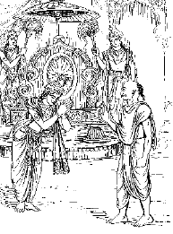
सोमशर्माने कहा—राजन्! वहाँ सबकी कुशल है। यहाँ तो अद्भुत आश्चर्यकी बात है! ऐसा सुन्दर और विचित्र नगर तो कहीं किसीने भी नहीं देखा होगा। बताओ तो सही, तुम्हें इस नगरकी प्राप्ति कैसे हुई?
शोभन बोले—द्विजेन्द्र! कार्तिकके कृष्णपक्षमें जो ‘रमा’ नामकी एकादशी होती है, उसीका व्रत करनेसे मुझे ऐसे नगरकी प्राप्ति हुई है। ब्रह्मन्! मैंने श्रद्धाहीन होकर इस उत्तम व्रतका अनुष्ठान किया था; इसलिये मैं ऐसा मानता हूँ कि यह नगर सदा स्थिर रहनेवाला नहीं है। आप मुचुकुन्दकी सुन्दरी कन्या चन्द्रभागासे यह सारा वृत्तान्त कहियेगा।
शोभनकी बात सुनकर सोमशर्मा ब्राह्मण मुचुकुन्दपुरमें गये और वहाँ चन्द्रभागाके सामने उन्होंने सारा वृत्तान्त कह सुनाया।
सोमशर्मा बोले—शुभे! मैंने तुम्हारे पतिको प्रत्यक्ष देखा है तथा इन्द्रपुरीके समान उनके दुर्धर्ष नगरका भी अवलोकन किया है। वे उसे अस्थिर बतलाते थे। तुम उसको स्थिर बनाओ।
चन्द्रभागाने कहा—ब्रह्मर्षे! मेरे मनमें पतिके दर्शनकी लालसा लगी हुई है। आप मुझे वहाँ ले चलिये। मैं अपने व्रतके पुण्यसे उस नगरको स्थिर बनाऊँगी।
भगवान् श्रीकृष्ण कहते हैं—राजन्! चन्द्रभागाकी बात सुनकर सोमशर्मा उसे साथ ले मन्दराचल पर्वतके निकट वामदेव मुनिके आश्रमपर गये। वहाँ ऋषिके मन्त्रकी शक्ति तथा एकादशी-सेवनके प्रभावसे चन्द्रभागाका शरीर दिव्य हो गया तथा उसने दिव्य गति प्राप्त कर ली। इसके बाद वह पतिके समीप गयी। उस समय उसके नेत्र हर्षोल्लाससे खिल रहे थे। अपनी प्रिय पत्नीको आयी देख शोभनको बड़ी प्रसन्नता हुई। उन्होंने उसे बुलाकर अपने वामभागमें सिंहासनपर बिठाया; तदनन्तर चन्द्रभागाने हर्षमें भरकर अपने प्रियतमसे यह प्रिय वचन कहा—‘नाथ! मैं हितकी बात कहती हूँ, सुनिये। पिताके घरमें रहते समय जब मेरी अवस्था आठ वर्षसे अधिक हो गयी, तभीसे लेकर आजतक मैंने जो एकादशीके व्रत किये हैं और उनसे मेरे भीतर जो पुण्य संचित हुआ है, उसके प्रभावसे यह नगर कल्पके अन्ततक स्थिर रहेगा तथा सब प्रकारके मनोवांछित वैभवसे समृद्धिशाली होगा।’
नृपश्रेष्ठ! इस प्रकार ‘रमा’ व्रतके प्रभावसे चन्द्रभागा दिव्य भोग, दिव्य रूप और दिव्य आभरणोंसे विभूषित हो अपने पतिके साथ मन्दराचलके शिखरपर विहार करती है। राजन्! मैंने तुम्हारे समक्ष ‘रमा’ नामक एकादशीका वर्णन किया है। यह चिन्तामणि तथा कामधेनुके समान सब मनोरथोंको पूर्ण करनेवाली है। मैंने दोनों पक्षोंके एकादशीव्रतोंका पापनाशक माहात्म्य बताया है। जैसी कृष्णपक्षकी एकादशी है, वैसी ही शुक्लपक्षकी भी है; उनमें भेद नहीं करना चाहिये। जैसे सफेद रंगकी गाय हो या काले रंगकी, दोनोंका दूध एक-सा ही होता है, इसी प्रकार दोनों पक्षोंकी एकादशियाँ समान फल देनेवाली हैं। जो मनुष्य एकादशी-व्रतोंका माहात्म्य सुनता है, वह सब पापोंसे मुक्त हो श्रीविष्णुलोकमें प्रतिष्ठित होता है।
कार्तिकमास शुक्लपक्षकी ‘प्रबोधिनी’ एकादशीका माहात्म्य
युधिष्ठिरने पूछा—श्रीकृष्ण! मैंने आपके मुखसे ‘रमा’ का यथार्थ माहात्म्य सुना। मानद! अब कार्तिक शुक्लपक्षमें जो एकादशी होती है; उसकी महिमा बताइये।
भगवान् श्रीकृष्ण बोले—राजन्! कार्तिकके शुक्लपक्षमें जो एकादशी होती है, उसका जैसा वर्णन लोकस्रष्टा ब्रह्माजीने नारदजीसे किया था; वही मैं तुम्हें बतलाता हूँ।
नारदजीने कहा—पिताजी! जिसमें धर्म-कर्ममें प्रवृत्ति करानेवाले भगवान् गोविन्द जागते हैं, उस ‘प्रबोधिनी’ एकादशीका माहात्म्य बतलाइये।
ब्रह्माजी बोले—मुनिश्रेष्ठ! ‘प्रबोधिनी’ का माहात्म्य पापका नाश, पुण्यकी वृद्धि तथा उत्तम बुद्धिवाले पुरुषोंको मोक्ष प्रदान करनेवाला है। समुद्रसे लेकर सरोवरतक जितने भी तीर्थ हैं, वे सभी अपने माहात्म्यकी तभीतक गर्जना करते हैं, जबतक कि कार्तिक-मासमें भगवान् विष्णुकी ‘प्रबोधिनी’ तिथि नहीं आ जाती। ‘प्रबोधिनी’ एकादशीको एक ही उपवास कर लेनेसे मनुष्य हजार अश्वमेध तथा सौ राजसूय-यज्ञका फल पा लेता है। बेटा! जो दुर्लभ है, जिसकी प्राप्ति असम्भव है तथा जिसे त्रिलोकीमें किसीने भी नहीं देखा है; ऐसी वस्तुके लिये भी याचना करनेपर ‘प्रबोधिनी’ एकादशी उसे देती है। भक्तिपूर्वक उपवास करनेपर मनुष्योंको ‘हरिबोधिनी’ एकादशी ऐश्वर्य, सम्पत्ति, उत्तम बुद्धि, राज्य तथा सुख प्रदान करती है। मेरु पर्वतके समान जो बड़े-बड़े पाप हैं, उन सबको यह पापनाशिनी ‘प्रबोधिनी’ एक ही उपवाससे भस्म कर देती है। पहलेके हजारों जन्मोंमें जो पाप किये गये हैं, उन्हें ‘प्रबोधिनी’ की रात्रिका जागरण रूईकी ढेरीके समान भस्म कर डालता है। जो लोग ‘प्रबोधिनी’ एकादशीका मनसे ध्यान करते तथा जो इसके व्रतका अनुष्ठान करते हैं, उनके पितर नरकके दु:खोंसे छुटकारा पाकर भगवान् विष्णुके परमधामको चले जाते हैं। ब्रह्मन्! अश्वमेध आदि यज्ञोंसे भी जिस फलकी प्राप्ति कठिन है, वह ‘प्रबोधिनी’ एकादशीको जागरण करनेसे अनायास ही मिल जाता है। सम्पूर्ण तीर्थोंमें नहाकर सुवर्ण और पृथ्वी दान करनेसे जो फल मिलता है, वह श्रीहरिके निमित्त जागरण करनेमात्रसे मनुष्य प्राप्त कर लेता है। जैसे मनुष्योंके लिये मृत्यु अनिवार्य है, उसी प्रकार धन-सम्पत्तिमात्र भी क्षणभंगुर है; ऐसा समझकर एकादशीका व्रत करना चाहिये। तीनों लोकोंमें जो कोई भी तीर्थ सम्भव हैं, वे सब ‘प्रबोधिनी’ एकादशीका व्रत करनेवाले मनुष्यके घरमें मौजूद रहते हैं। कार्तिककी ‘हरिबोधिनी’ एकादशी पुत्र तथा पौत्र प्रदान करनेवाली है। जो ‘प्रबोधिनी’ को उपासना करता है, वही ज्ञानी है, वही योगी है, वही तपस्वी और जितेन्द्रिय है तथा उसीको भोग और मोक्षकी प्राप्ति होती है।
बेटा! ‘प्रबोधिनी’ एकादशीको भगवान् विष्णुके उद्देश्यसे मानव जो स्नान, दान, जप और होम करता है, वह सब अक्षय होता है। जो मनुष्य उस तिथिको उपवास करके भगवान् माधवकी भक्तिपूर्वक पूजा करते हैं, वे सौ जन्मोंके पापोंसे छुटकारा पा जाते हैं। इस व्रतके द्वारा देवेश्वर जनार्दनको सन्तुष्ट करके मनुष्य सम्पूर्ण दिशाओंको अपने तेजसे प्रकाशित करता हुआ श्रीहरिके वैकुण्ठ धामको जाता है। ‘प्रबोधिनी’ को पूजित होनेपर भगवान् गोविन्द मनुष्योंके बचपन, जवानी और बुढ़ापेमें किये हुए सौ जन्मोंके पापोंको, चाहे वे अधिक हों या कम, धो डालते हैं। अत: सर्वथा प्रयत्न करके सम्पूर्ण मनोवांछित फलोंको देनेवाले देवाधिदेव जनार्दनकी उपासना करनी चाहिये। बेटा नारद! जो भगवान् विष्णुके भजनमें तत्पर होकर कार्तिकमें पराये अन्नका त्याग करता है, वह चान्द्रायण-व्रतका फल पाता है। जो प्रतिदिन शास्त्रीय चर्चासे मनोरंजन करते हुए कार्तिकमास व्यतीत करता है, वह अपने सम्पूर्ण पापोंको जला डालता और दस हजार यज्ञोंका फल प्राप्त करता है। कार्तिकमासमें शास्त्रीय कथाके कहने-सुननेसे भगवान् मधुसूदनको जैसा सन्तोष होता है, वैसा उन्हें यज्ञ, दान अथवा जप आदिसे भी नहीं होता। जो शुभकर्म-परायण पुरुष कार्तिकमासमें एक या आधा श्लोक भी भगवान् विष्णुकी कथा बाँचते हैं, उन्हें सौ गोदानका फल मिलता है। महामुने! कार्तिकमें भगवान् केशवके सामने शास्त्रका स्वाध्याय तथा श्रवण करना चाहिये। मुनिश्रेष्ठ! जो कार्तिकमें कल्याण-प्राप्तिके लोभसे श्रीहरिकी कथाका प्रबन्ध करता है, वह अपनी सौ पीढ़ियोंको तार देता है। जो मनुष्य सदा नियमपूर्वक कार्तिकमासमें भगवान् विष्णुकी कथा सुनता है, उसे सहस्र गोदानका फल मिलता है। जो ‘प्रबोधिनी’ एकादशीके दिन श्रीविष्णुकी कथा श्रवण करता है, उसे सातों द्वीपोंसे युक्त पृथ्वी दान करनेका फल प्राप्त होता है। मुनिश्रेष्ठ! जो भगवान् विष्णुकी कथा सुनकर अपनी शक्तिके अनुसार कथा-वाचककी पूजा करते हैं, उन्हें अक्षय लोककी प्राप्ति होती है। नारद! जो मनुष्य कार्तिकमासमें भगवत्सम्बन्धी गीत और शास्त्र-विनोदके द्वारा समय बिताता है, उसकी पुनरावृत्ति मैंने नहीं देखी है। मुने! जो पुण्यात्मा पुुरुष भगवान्के समक्ष गान, नृत्य, वाद्य और श्रीविष्णुकी कथा करता है, वह तीनों लोकोंके ऊपर विराजमान होता है।
मुनिश्रेष्ठ! कार्तिककी ‘प्रबोधिनी’ एकादशीके दिन बहुत-से फल-फूल, कपूर, अरगजा और कुंकुमके द्वारा श्रीहरिकी पूजा करनी चाहिये। एकादशी आनेपर धनकी कंजूसी नहीं करनी चाहिये; क्योंकि उस दिन दान आदि करनेसे असंख्य पुण्यकी प्राप्ति होती है। ‘प्रबोधिनी’ को जागरणके समय शंखमें जल लेकर फल तथा नाना प्रकारके द्रव्योंके साथ श्रीजनार्दनको अर्घ्य देना चाहिये। सम्पूर्ण तीर्थोंमें स्नान करने और सब प्रकारके दान देनेसे जो फल मिलता है, वही ‘प्रबोधिनी’ एकादशीको अर्घ्य देनेसे करोड़ गुना होकर प्राप्त होता है। देवर्षे! अर्घ्यके पश्चात् भोजन-आच्छादन और दक्षिणा आदिके द्वारा भगवान् विष्णुकी प्रसन्नताके लिये गुरुकी पूजा करनी चाहिये। जो मनुष्य उस दिन श्रीमद्भागवतकी कथा सुनता अथवा पुराणका पाठ करता है, उसे एक-एक अक्षरपर कपिलादानका फल मिलता है। मुनिश्रेष्ठ! कार्तिकमें जो मनुष्य अपनी शक्तिके अनुसार शास्त्रोक्त रीतिसे वैष्णवव्रत (एकादशी)-का पालन करता है, उसकी मुक्ति अविचल है। केतकीके एक पत्तेसे पूजित होनेपर भगवान् गरुड़ध्वज एक हजार वर्षतक अत्यन्त तृप्त रहते हैं। देवर्षे! जो अगस्तके फूलसे भगवान् जनार्दनकी पूजा करता है, उसके दर्शनमात्रसे नरककी आग बुझ जाती है। वत्स! जो कार्तिकमें भगवान् जनार्दनको तुलसीके पत्र और पुष्प अर्पण करते हैं, उनका जन्मभरका किया हुआ सारा पाप भस्म हो जाता है। मुने! जो प्रतिदिन दर्शन, स्पर्श, ध्यान, नाम-कीर्तन, स्तवन, अर्पण, सेचन, नित्यपूजन तथा नमस्कारके द्वारा तुलसीमें नव प्रकारकी भक्ति करते हैं, वे कोटि सहस्र युगोंतक पुण्यका विस्तार करते हैं।*
* तुलसीदलपुष्पाणि ये यच्छन्ति जनार्दने।
कार्तिके सकलं वत्स पापं जन्मार्जितं दहेत्॥
दृष्टा स्पृष्टाथ वा ध्याता कीर्तिता नामत: स्तुता।
रोपिता सेचिता नित्यं पूजिता तुलसी नता॥
नवधा तुलसीभक्तिं ये कुर्वन्ति दिने दिने।
युगकोटिसहस्राणि तन्वन्ति सुकृतं मुने॥
(६३।६१—६३)
नारद! सब प्रकारके फूलों और पत्तोंको चढ़ानेसे जो फल होता है, वह कार्तिकमासमें तुलसीके एक पत्तेसे मिल जाता है। कार्तिक आया देख प्रतिदिन नियमपूर्वक तुलसीके कोमल पत्तोंसे महाविष्णु श्रीजनार्दनका पूजन करना चाहिये। सौ यज्ञोंद्वारा देवताओंका यजन करने और अनेक प्रकारके दान देनेसे जो पुण्य होता है, वह कार्तिकमें तुलसीदलमात्रसे केशवकी पूजा करनेपर प्राप्त हो जाता है।
पुरुषोत्तममास प्रथमपक्षकी ‘कमला’ एकादशीका माहात्म्य
युधिष्ठिरने पूछा—भगवन्! अब मैं श्रीविष्णुके व्रतोंमें उत्तम व्रतका, जो सब पापोंको हर लेनेवाला तथा व्रती मनुष्योंको मनोवांछित फल देनेवाला हो, श्रवण करना चाहता हूँ। जनार्दन! पुरुषोत्तममासकी एकादशीकी कथा कहिये, उसका क्या फल है? और उसमें किस देवताका पूजन किया जाता है? प्रभो! किस दानका क्या पुण्य है? मनुष्योंको क्या करना चाहिये? उस समय कैसे स्नान किया जाता है? किस मन्त्रका जप होता है? कैसी पूजन-विधि बतायी गयी है? पुरुषोत्तम! पुरुषोत्तममासमें किस अन्नका भोजन उत्तम है?
भगवान् श्रीकृष्ण बोले—राजेन्द्र! अधिकमास आनेपर जो एकादशी होती है, वह ‘कमला’ नामसे प्रसिद्ध है। वह तिथियोंमें उत्तम तिथि है। उसके व्रतके प्रभावसे लक्ष्मी अनुकूल होती हैं। उस दिन ब्राह्म मुहूर्तमें उठकर भगवान् पुरुषोत्तमका स्मरण करे और विधिपूर्वक स्नान करके व्रती पुरुष व्रतका नियम ग्रहण करे। घरपर जप करनेका एक गुना, नदीके तटपर दूना, गोशालामें सहस्रगुना, अग्निहोत्रगृहमें एक हजार एक सौ गुना, शिवके क्षेत्रोंमें, तीर्थोंमें, देवताओंके निकट तथा तुलसीके समीप लाख गुना और भगवान् विष्णुके निकट अनन्त गुना फल होता है।
अवन्तीपुरीमें शिवशर्मा नामक एक श्रेष्ठ ब्राह्मण रहते थे, उनके पाँच पुत्र थे। इनमें जो सबसे छोटा था, वह पापाचारी हो गया; इसलिये पिता तथा स्वजनोंने उसे त्याग दिया। अपने बुरे कर्मोंके कारण निर्वासित होकर वह बहुत दूर वनमें चला गया। दैवयोगसे एक दिन वह तीर्थराज प्रयागमें जा पहुँचा। भूखसे दुर्बल शरीर और दीन मुख लिये उसने त्रिवेणीमें स्नान किया। फिर क्षुधासे पीड़ित होकर वह वहाँ मुनियोंके आश्रम खोजने लगा। इतनेमें उसे वहाँ हरिमित्र मुनिका उत्तम आश्रम दिखायी दिया। पुरुषोत्तममासमें वहाँ बहुत-से मनुष्य एकत्रित हुए थे। आश्रमपर पापनाशक कथा कहनेवाले ब्राह्मणोंके मुखसे उसने श्रद्धापूर्वक ‘कमला’ एकादशीकी महिमा सुनी, जो परम पुण्यमयी तथा भोग और मोक्ष प्रदान करनेवाली है। जयशर्माने विधिपूर्वक ‘कमला’ एकादशीकी कथा सुनकर उन सबके साथ मुनिके आश्रमपर ही व्रत किया। जब आधी रात हुई तो भगवती लक्ष्मी उसके पास आकर बोलीं—‘ब्रह्मन्! इस समय ‘कमला’ एकादशीके व्रतके प्रभावसे मैं तुमपर बहुत प्रसन्न हूँ और देवाधिदेव श्रीहरिकी आज्ञा पाकर वैकुण्ठधामसे आयी हूँ। मैं तुम्हें वर दूँगी।’
ब्राह्मण बोला—माता लक्ष्मी! यदि आप मुझपर प्रसन्न हैं तो वह व्रत बताइये, जिसकी कथा-वार्तामें साधु-ब्राह्मण सदा संलग्न रहते हैं।
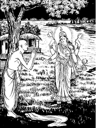
लक्ष्मीने कहा—ब्राह्मण! एकादशी-व्रतका माहात्म्य श्रोताओंके सुननेयोग्य सर्वोत्तम विषय है। यह पवित्र वस्तुओंमें सबसे उत्तम है। इससे दु:स्वप्नका नाश तथा पुण्यकी प्राप्ति होती है, अत: इसका यत्नपूर्वक श्रवण करना चाहिये। उत्तम पुरुष श्रद्धासे युक्त हो एक या आधे श्लोकका पाठ करनेसे भी करोड़ों महापातकोंसे तत्काल मुक्त हो जाता है। जैसे मासोंमें पुरुषोत्तममास, पक्षियोंमें गरुड़ तथा नदियोंमें गंगा श्रेष्ठ हैं; उसी प्रकार तिथियोंमें द्वादशी तिथि उत्तम है। समस्त देवता आज भी [एकादशी-व्रतके ही लोभसे] भारतवर्षमें जन्म लेनेकी इच्छा रखते हैं। देवगण सदा ही रोग-शोकसे रहित भगवान् नारायणका पूजन करते हैं। जो लोग मेरे प्रभु भगवान् नारायणके नामका सदा भक्तिपूर्वक जप करते हैं, उनकी ब्रह्मा आदि देवता सर्वदा पूजा करते हैं। जो लोग श्रीहरिके नाम-जपमें संलग्न हैं, उनकी लीला-कथाओंके कीर्तनमें तत्पर हैं तथा निरन्तर श्रीहरिकी पूजामें ही प्रवृत्त रहते हैं; वे मनुष्य कलियुगमें कृतार्थ हैं। यदि दिनमें एकादशी और द्वादशी हो तथा रात्रि बीतते-बीतते त्रयोदशी आ जाय तो उस त्रयोदशीके पारणमें सौ यज्ञोंका फल प्राप्त होता है। व्रत करनेवाला पुरुष चक्रसुदर्शनधारी देवाधिदेव श्रीविष्णुके समक्ष निम्नांकित मन्त्रका उच्चारण करके भक्तिभावसे सन्तुष्टचित्त होकर उपवास करे। वह मन्त्र इस प्रकार है—
एकादश्यां निराहार: स्थित्वाहमपरेऽहनि।
भोक्ष्यामि पुण्डरीकाक्ष शरणं मे भवाच्युत॥
(६४।३४)
‘कमलनयन! भगवान् अच्युत! मैं एकादशीको निराहार रहकर दूसरे दिन भोजन करूँगा। आप मुझे शरण दें।’
तत्पश्चात् व्रत करनेवाला मनुष्य मन और इन्द्रियोंको वशमें करके गीत, वाद्य, नृत्य और पुराण-पाठ आदिके द्वारा रात्रिमें भगवान्के समक्ष जागरण करे। फिर द्वादशीके दिन उठकर स्नानके पश्चात् जितेन्द्रियभावसे विधिपूर्वक श्रीविष्णुकी पूजा करे। एकादशीको पंचामृतसे जनार्दनको नहलाकर द्वादशीको केवल दूधमें स्नान करानेसे श्रीहरिका सायुज्य प्राप्त होता है। पूजा करके भगवान्से इस प्रकार प्रार्थना करे—
अज्ञानतिमिरान्धस्य व्रतेनानेन केशव।
प्रसीद सुमुखो भूत्वा ज्ञानदृष्टिप्रदो भव॥
(६४।३९)
‘केशव! मैं अज्ञानरूपी रतौंधीसे अंधा हो गया हूँ। आप इस व्रतसे प्रसन्न हों और प्रसन्न होकर मुझे ज्ञानदृष्टि प्रदान करें।’
इस प्रकार देवताओंके स्वामी देवाधिदेव भगवान् गदाधरसे निवेदन करके भक्तिपूर्वक ब्राह्मणोंको भोजन कराये तथा उन्हें दक्षिणा दे। उसके बाद भगवान् नारायणके शरणागत होकर बलिवैश्वदेवकी विधिसे पंचमहायज्ञोंका अनुष्ठान करके स्वयं मौन हो अपने बन्धु-बान्धवोंके साथ भोजन करे। इस प्रकार जो शुद्ध-भावसे पुण्यमय एकादशीका व्रत करता है, वह पुनरावृत्तिसे रहित वैकुण्ठधामको प्राप्त होता है।
भगवान् श्रीकृष्ण कहते हैं—राजन्! ऐसा कहकर लक्ष्मीदेवी उस ब्राह्मणको वरदान दे अन्तर्धान हो गयीं। फिर वह ब्राह्मण भी धनी होकर पिताके घरपर आ गया। इस प्रकार जो ‘कमला’ का उत्तम व्रत करता है तथा एकादशीके दिन इसका माहात्म्य सुनता है, वह सब पापोंसे मुक्त हो जाता है।
युधिष्ठिर बोले—जनार्दन! पापका नाश और पुण्यका दान करनेवाली एकादशीके माहात्म्यका पुन: वर्णन कीजिये, जिसे इस लोकमें करके मनुष्य परम पदको प्राप्त होता है।
भगवान् श्रीकृष्णने कहा—राजन्! शुक्ल या कृष्णपक्षमें जभी एकादशी प्राप्त हो, उसका परित्याग न करे, क्योंकि वह मोक्षरूप सुखको बढ़ानेवाली है। कलियुगमें तो एकादशी ही भव-बन्धनसे मुक्त करनेवाली, सम्पूर्ण मनोवांछित कामनाओंको देनेवाली तथा पापोंका नाश करनेवाली है। एकादशी रविवारको, किसी मंगलमय पर्वके समय अथवा संक्रान्तिके ही दिन क्यों न हो, सदा ही उसका व्रत करना चाहिये। भगवान् विष्णुके प्रिय भक्तोंको एकादशीका त्याग कभी नहीं करना चाहिये। जो शास्त्रोक्त विधिसे इस लोकमें एकादशीका व्रत करते हैं, वे जीवन्मुक्त देखे जाते हैं, इसमें तनिक भी सन्देह नहीं है।
युधिष्ठिरने पूछा—श्रीकृष्ण! वे जीवन्मुक्त कैसे हैं? तथा विष्णुरूप कैसे होते हैं? मुझे इस विषयको जाननेके लिये बड़ी उत्सुकता हो रही है।
भगवान् श्रीकृष्ण बोले—राजन्! जो कलियुगमें भक्तिपूर्वक शास्त्रीय विधिके अनुसार निर्जल रहकर एकादशीका उत्तम व्रत करते हैं, वे विष्णुरूप तथा जीवन्मुक्त क्यों नहीं हो सकते हैं? एकादशी-व्रतके समान सब पापोंको हरनेवाला तथा मनुष्योंकी समस्त कामनाओंको पूर्ण करनेवाला पवित्र व्रत दूसरा कोई नहीं है। दशमीको एक बार भोजन, एकादशीको निर्जल व्रत तथा द्वादशीको पारण करके मनुष्य श्रीविष्णुके समान हो जाते हैं।
पुरुषोत्तममास द्वितीयपक्षकी ‘कामदा’ एकादशीका माहात्म्य
पुरुषोत्तममासके द्वितीय पक्षकी एकादशीका नाम ‘कामदा’ है। जो श्रद्धापूर्वक ‘कामदा’ के शुभ व्रतका अनुष्ठान करता है, वह इस लोक और परलोकमें भी मनोवांछित वस्तुको पाता है। यह ‘कामदा’ पवित्र, पावन, महापातकनाशिनी तथा व्रत करनेवालोंको भोग एवं मोक्ष प्रदान करनेवाली है। नृपश्रेष्ठ! ‘कामदा’ एकादशीको विधिपूर्वक पुष्प, धूप, नैवेद्य तथा फल आदिके द्वारा भगवान् पुरुषोत्तमकी पूजा करनी चाहिये। व्रत करनेवाला वैष्णव पुरुष दशमी तिथिको काँसके बर्तन, उड़द, मसूर, चना, कोदो, साग, मधु, पराया अन्न, दो बार भोजन तथा मैथुन—इन दसोंका परित्याग करे। इसी प्रकार एकादशीको जूआ, निद्रा, पान, दाँतुन, परायी निन्दा, चुगली, चोरी, हिंसा, मैथुन, क्रोध और असत्य-भाषण—इन ग्यारह दोषोंको त्याग दे तथा द्वादशीके दिन काँसका बर्तन, उड़द, मसूर, तेल, असत्य-भाषण, व्यायाम, परदेशगमन, दो बार भोजन, मैथुन, बैलकी पीठपर सवारी, पराया अन्न तथा साग—इन बारह वस्तुओंका त्याग करे। राजन्! जिन्होंने इस विधिसे ‘कामदा’ एकादशीका व्रत किया और रात्रिमें जागरण करके श्रीपुरुषोत्तमकी पूजा की है, वे सब पापोंसे मुक्त हो परम गतिको प्राप्त होते हैं। इसके पढ़ने और सुननेसे सहस्र गोदानका फल मिलता है।